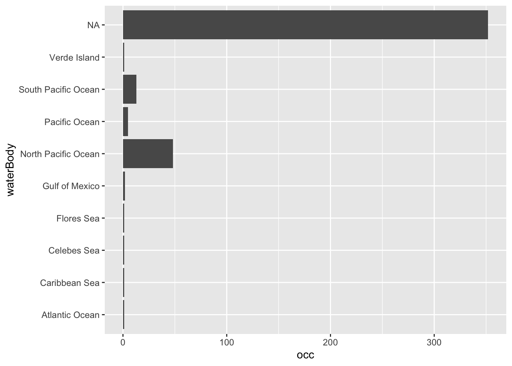
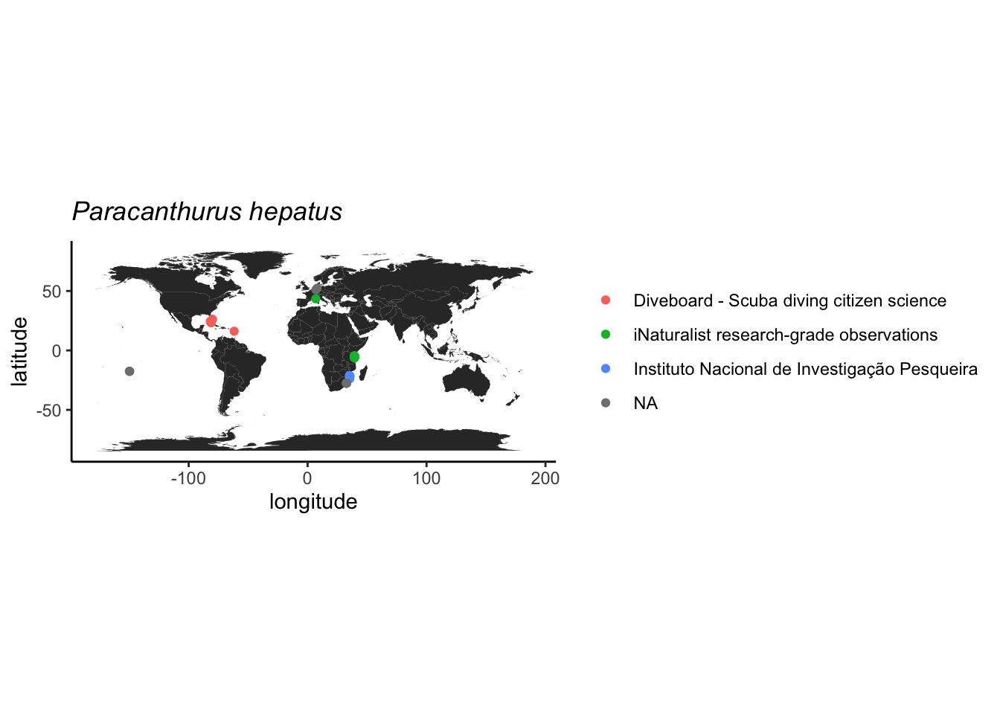

Atividade 3
3.1 Acesso a bancos de dados abertos
O acesso pode ser feito de diferentes formas, seja diretamente no website do repositório, utilizando-se pacotes específicos que acessam os repositórios via R ou Python, ou através de API (Application Programming Interface). Nesta última opção, o repositório é acessado por outro aplicativo ou serviço web para automatização de tarefas, seja em servidor local ou remoto, mas requer conhecimento de programação em Java e outras linguagens e não será tratado aqui.
Nesta atividade, temos como objetivo acessar um repositório de dados de ocorrência de espécies, inspecionar os dados, avaliar sua qualidade e fazer um mapa com as ocorrências.
Para iniciar, vamos escolher um repositório e uma espécie de interesse. Vamos iniciar com uma única espécie para facilitar as demais etapas.
O GBIF (Global Biodiversity Information Facility) é o maior repositório de ocorrências da biodiversidade da atualidade, então será nossa opção de repositório. No entanto, o OBIS (Ocean Biodiversity Information System) é um repositório dedicado às espécies marinhas e espelhado no GBIF. Assim, espera-se que algumas ocorrências sejam duplicadas nos dois repositórios.
3.1.1 Exemplo: Finding Dori
A espécie-alvo será o peixe marinho Paracanthurus hepatus, também conhecido como Blue Tang e, mais recentemente como Dori!.

Nosso primeiro exemplor será com as ocorrencias do
GBIF e, para tal, vamos utilizar o pacote
rgbif.
3.1.2 GBIF
Vamos fazer uso do pacote tidyverse para manipular dos
dados, então vamos carregar este pacote e o rgbif.
É importante explorar as funções do pacote e pode-se fazer isto
usando o comando ?rgbif e, para ler sobre uma função em
particular basta colocar ? em frente ao nome da função. Se
o pacote não estiver carregado ou instalada é preciso usar
??.
A função occ_data faz uma busca simplificada das
ocorrências no repositório do GBIF por meio do nome
científico, número de identificação, país e outros. Neste caso, vamos
procurar diretamente pelo nome da espécie-alvo. Outros atributos podem
ser adicionados à função para refinar a busca, leia o material de ajuda
da função para ter uma ideia. Vamos aproveitar alguns destes atributos e
selecionar apenas ocorrências que possuem coordenadas e sem problemas
geoespaciais.
# checar funcoes
?occ_data
# baixar ocorrencias
dori_gbif <- occ_data(scientificName = "Paracanthurus hepatus",
hasCoordinate = TRUE,
hasGeospatialIssue=FALSE)
# dimensoes
dim(dori_gbif)## NULL## [1] 500 147## [1] "key"
## [2] "scientificName"
## [3] "decimalLatitude"
## [4] "decimalLongitude"
## [5] "issues"
## [6] "datasetKey"
## [7] "publishingOrgKey"
## [8] "installationKey"
## [9] "hostingOrganizationKey"
## [10] "publishingCountry"
## [11] "protocol"
## [12] "lastCrawled"
## [13] "lastParsed"
## [14] "crawlId"
## [15] "basisOfRecord"
## [16] "occurrenceStatus"
## [17] "taxonKey"
## [18] "kingdomKey"
## [19] "phylumKey"
## [20] "orderKey"
## [21] "familyKey"
## [22] "genusKey"
## [23] "speciesKey"
## [24] "acceptedTaxonKey"
## [25] "acceptedScientificName"
## [26] "kingdom"
## [27] "phylum"
## [28] "order"
## [29] "family"
## [30] "genus"
## [31] "species"
## [32] "genericName"
## [33] "specificEpithet"
## [34] "taxonRank"
## [35] "taxonomicStatus"
## [36] "iucnRedListCategory"
## [37] "dateIdentified"
## [38] "coordinateUncertaintyInMeters"
## [39] "continent"
## [40] "stateProvince"
## [41] "year"
## [42] "month"
## [43] "day"
## [44] "eventDate"
## [45] "startDayOfYear"
## [46] "endDayOfYear"
## [47] "modified"
## [48] "lastInterpreted"
## [49] "references"
## [50] "license"
## [51] "isSequenced"
## [52] "isInCluster"
## [53] "datasetName"
## [54] "recordedBy"
## [55] "identifiedBy"
## [56] "dnaSequenceID"
## [57] "geodeticDatum"
## [58] "countryCode"
## [59] "gbifRegion"
## [60] "country"
## [61] "publishedByGbifRegion"
## [62] "rightsHolder"
## [63] "identifier"
## [64] "http://unknown.org/nick"
## [65] "verbatimEventDate"
## [66] "verbatimLocality"
## [67] "collectionCode"
## [68] "gbifID"
## [69] "occurrenceID"
## [70] "taxonID"
## [71] "http://unknown.org/captive_cultivated"
## [72] "catalogNumber"
## [73] "institutionCode"
## [74] "eventTime"
## [75] "identificationID"
## [76] "lifeStage"
## [77] "dynamicProperties"
## [78] "vitality"
## [79] "occurrenceRemarks"
## [80] "projectId"
## [81] "distanceFromCentroidInMeters"
## [82] "informationWithheld"
## [83] "recordNumber"
## [84] "vernacularName"
## [85] "http://unknown.org/taxonRankID"
## [86] "taxonConceptID"
## [87] "identificationVerificationStatus"
## [88] "http://unknown.org/species"
## [89] "taxonRemarks"
## [90] "datasetID"
## [91] "eventID"
## [92] "http://unknown.org/language"
## [93] "footprintWKT"
## [94] "originalNameUsage"
## [95] "county"
## [96] "nameAccordingTo"
## [97] "sex"
## [98] "higherGeography"
## [99] "institutionKey"
## [100] "locality"
## [101] "language"
## [102] "type"
## [103] "higherClassification"
## [104] "networkKeys"
## [105] "coordinatePrecision"
## [106] "collectionKey"
## [107] "otherCatalogNumbers"
## [108] "samplingProtocol"
## [109] "acceptedNameUsage"
## [110] "locationRemarks"
## [111] "identificationRemarks"
## [112] "depth"
## [113] "depthAccuracy"
## [114] "bibliographicCitation"
## [115] "individualCount"
## [116] "waterBody"
## [117] "georeferencedBy"
## [118] "sampleSizeUnit"
## [119] "sampleSizeValue"
## [120] "habitat"
## [121] "institutionID"
## [122] "dataGeneralizations"
## [123] "maximumDistanceAboveSurfaceInMeters"
## [124] "georeferenceProtocol"
## [125] "islandGroup"
## [126] "island"
## [127] "verbatimDepth"
## [128] "ownerInstitutionCode"
## [129] "elevation"
## [130] "elevationAccuracy"
## [131] "rights"
## [132] "georeferenceSources"
## [133] "organismQuantity"
## [134] "organismQuantityType"
## [135] "programmeAcronym"
## [136] "locationAccordingTo"
## [137] "name"
## [138] "samplingEffort"
## [139] "fieldNumber"
## [140] "locationID"
## [141] "eventRemarks"
## [142] "associatedReferences"
## [143] "disposition"
## [144] "materialSampleID"
## [145] "collectionID"
## [146] "preparations"
## [147] "municipality"Acima, vemos que o conjunto de dados tem ocorrências (uma por linha)
e variáveis. As variáveis podem ser utilizadas para filtrar as
ocorrências de acordo com o objetivo, além de fornecerem diversos dados
a respeito das ocorrências, incluindo dados dos amostradores e
detentores dos direitos. Vale notar que o conjunto de dados retornado
pelo GBIF não é um data frame simples, mas
sim um list que contém um conjunto de
data frames. Para acessar estes data frames é
necessário usar o operador $.
3.2 Problemas reportados
Um dos campos mais úteis dos dados é a coluna issues,
pois ela indica problema já identificados pelo validador automático do
repositório. Os problemas (issues) possuem um código que pode
ser conferido pela função gbif_issues. Ao usar a função não
é preciso indicar nenhum atributo, pois ela retornará um dataframe com
as abreviações usadas e a descrição dos problemas catalogados no
GBIF.
## code issue
## 1 bri BASIS_OF_RECORD_INVALID
## 2 ccm CONTINENT_COUNTRY_MISMATCH
## 3 cdc CONTINENT_DERIVED_FROM_COORDINATES
## 4 conti CONTINENT_INVALID
## 5 cdiv COORDINATE_INVALID
## 6 cdout COORDINATE_OUT_OF_RANGE
## 7 cdrep COORDINATE_REPROJECTED
## 8 cdrepf COORDINATE_REPROJECTION_FAILED
## 9 cdreps COORDINATE_REPROJECTION_SUSPICIOUS
## 10 cdround COORDINATE_ROUNDED
## 11 cucdmis COUNTRY_COORDINATE_MISMATCH
## 12 cudc COUNTRY_DERIVED_FROM_COORDINATES
## 13 cuiv COUNTRY_INVALID
## 14 cum COUNTRY_MISMATCH
## 15 depmms DEPTH_MIN_MAX_SWAPPED
## 16 depnn DEPTH_NON_NUMERIC
## 17 depnmet DEPTH_NOT_METRIC
## 18 depunl DEPTH_UNLIKELY
## 19 elmms ELEVATION_MIN_MAX_SWAPPED
## 20 elnn ELEVATION_NON_NUMERIC
## 21 elnmet ELEVATION_NOT_METRIC
## 22 elunl ELEVATION_UNLIKELY
## 23 gass84 GEODETIC_DATUM_ASSUMED_WGS84
## 24 gdativ GEODETIC_DATUM_INVALID
## 25 iddativ IDENTIFIED_DATE_INVALID
## 26 iddatunl IDENTIFIED_DATE_UNLIKELY
## 27 mdativ MODIFIED_DATE_INVALID
## 28 mdatunl MODIFIED_DATE_UNLIKELY
## 29 muldativ MULTIMEDIA_DATE_INVALID
## 30 muluriiv MULTIMEDIA_URI_INVALID
## 31 preneglat PRESUMED_NEGATED_LATITUDE
## 32 preneglon PRESUMED_NEGATED_LONGITUDE
## 33 preswcd PRESUMED_SWAPPED_COORDINATE
## 34 rdativ RECORDED_DATE_INVALID
## 35 rdatm RECORDED_DATE_MISMATCH
## 36 rdatunl RECORDED_DATE_UNLIKELY
## 37 refuriiv REFERENCES_URI_INVALID
## 38 txmatfuz TAXON_MATCH_FUZZY
## 39 txmathi TAXON_MATCH_HIGHERRANK
## 40 txmatnon TAXON_MATCH_NONE
## 41 typstativ TYPE_STATUS_INVALID
## 42 zerocd ZERO_COORDINATE
## 43 cdpi COORDINATE_PRECISION_INVALID
## 44 cdumi COORDINATE_UNCERTAINTY_METERS_INVALID
## 45 indci INDIVIDUAL_COUNT_INVALID
## 46 interr INTERPRETATION_ERROR
## 47 iccos INDIVIDUAL_COUNT_CONFLICTS_WITH_OCCURRENCE_STATUS
## 48 osiic OCCURRENCE_STATUS_INFERRED_FROM_INDIVIDUAL_COUNT
## 49 osu OCCURRENCE_STATUS_UNPARSABLE
## 50 geodi GEOREFERENCED_DATE_INVALID
## 51 geodu GEOREFERENCED_DATE_UNLIKELY
## 52 ambcol AMBIGUOUS_COLLECTION
## 53 ambinst AMBIGUOUS_INSTITUTION
## 54 colmafu COLLECTION_MATCH_FUZZY
## 55 colmano COLLECTION_MATCH_NONE
## 56 incomis INSTITUTION_COLLECTION_MISMATCH
## 57 inmafu INSTITUTION_MATCH_FUZZY
## 58 inmano INSTITUTION_MATCH_NONE
## 59 osifbor OCCURRENCE_STATUS_INFERRED_FROM_BASIS_OF_RECORD
## 60 diffown DIFFERENT_OWNER_INSTITUTION
## 61 taxmatagg TAXON_MATCH_AGGREGATE
## 62 fpsrsinv FOOTPRINT_SRS_INVALID
## 63 fpwktinv FOOTPRINT_WKT_INVALID
## 64 anm ACCEPTED_NAME_MISSING
## 65 annu ACCEPTED_NAME_NOT_UNIQUE
## 66 anuidi ACCEPTED_NAME_USAGE_ID_INVALID
## 67 aitidinv ALT_IDENTIFIER_INVALID
## 68 bbmn BACKBONE_MATCH_NONE
## 69 basauthm BASIONYM_AUTHOR_MISMATCH
## 70 bibrinv BIB_REFERENCE_INVALID
## 71 chsun CHAINED_SYNOYM
## 72 clasna CLASSIFICATION_NOT_APPLIED
## 73 clasroi CLASSIFICATION_RANK_ORDER_INVALID
## 74 conbascomb CONFLICTING_BASIONYM_COMBINATION
## 75 desinv DESCRIPTION_INVALID
## 76 disinv DISTRIBUTION_INVALID
## 77 hom HOMONYM
## 78 minv MULTIMEDIA_INVALID
## 79 npm NAME_PARENT_MISMATCH
## 80 ns NO_SPECIES
## 81 nsinv NOMENCLATURAL_STATUS_INVALID
## 82 onder ORIGINAL_NAME_DERIVED
## 83 onnu ORIGINAL_NAME_NOT_UNIQUE
## 84 onuidinv ORIGINAL_NAME_USAGE_ID_INVALID
## 85 ov ORTHOGRAPHIC_VARIANT
## 86 pc PARENT_CYCLE
## 87 pnnu PARENT_NAME_NOT_UNIQUE
## 88 pnuidinv PARENT_NAME_USAGE_ID_INVALID
## 89 pp PARTIALLY_PARSABLE
## 90 pbg PUBLISHED_BEFORE_GENUS
## 91 rankinv RANK_INVALID
## 92 relmiss RELATIONSHIP_MISSING
## 93 scina SCIENTIFIC_NAME_ASSEMBLED
## 94 spprinv SPECIES_PROFILE_INVALID
## 95 taxstinv TAXONOMIC_STATUS_INVALID
## 96 taxstmis TAXONOMIC_STATUS_MISMATCH
## 97 unpars UNPARSABLE
## 98 vernnameinv VERNACULAR_NAME_INVALID
## 99 backmatagg BACKBONE_MATCH_AGGREGATE
## description
## 1 The given basis of record is impossible to interpret or seriously different from the recommended vocabulary.
## 2 The interpreted continent and country do not match up.
## 3 The interpreted continent is based on the coordinates, not the verbatim string information.
## 4 Uninterpretable continent values found.
## 5 Coordinate value given in some form but GBIF is unable to interpret it.
## 6 Coordinate has invalid lat/lon values out of their decimal max range.
## 7 The original coordinate was successfully reprojected from a different geodetic datum to WGS84.
## 8 The given decimal latitude and longitude could not be reprojected to WGS84 based on the provided datum.
## 9 Indicates successful coordinate reprojection according to provided datum, but which results in a datum shift larger than 0.1 decimal degrees.
## 10 Original coordinate modified by rounding to 5 decimals.
## 11 The interpreted occurrence coordinates fall outside of the indicated country.
## 12 The interpreted country is based on the coordinates, not the verbatim string information.
## 13 Uninterpretable country values found.
## 14 Interpreted country for dwc:country and dwc:countryCode contradict each other.
## 15 Set if supplied min>max
## 16 Set if depth is a non numeric value
## 17 Set if supplied depth is not given in the metric system, for example using feet instead of meters
## 18 Set if depth is larger than 11.000m or negative.
## 19 Set if supplied min > max elevation
## 20 Set if elevation is a non numeric value
## 21 Set if supplied elevation is not given in the metric system, for example using feet instead of meters
## 22 Set if elevation is above the troposphere (17km) or below 11km (Mariana Trench).
## 23 Indicating that the interpreted coordinates assume they are based on WGS84 datum as the datum was either not indicated or interpretable.
## 24 The geodetic datum given could not be interpreted.
## 25 The date given for dwc:dateIdentified is invalid and cant be interpreted at all.
## 26 The date given for dwc:dateIdentified is in the future or before Linnean times (1700).
## 27 A (partial) invalid date is given for dc:modified, such as a non existing date, invalid zero month, etc.
## 28 The date given for dc:modified is in the future or predates unix time (1970).
## 29 An invalid date is given for dc:created of a multimedia object.
## 30 An invalid uri is given for a multimedia object.
## 31 Latitude appears to be negated, e.g. 32.3 instead of -32.3
## 32 Longitude appears to be negated, e.g. 32.3 instead of -32.3
## 33 Latitude and longitude appear to be swapped.
## 34 A (partial) invalid date is given, such as a non existing date, invalid zero month, etc.
## 35 The recording date specified as the eventDate string and the individual year, month, day are contradicting.
## 36 The recording date is highly unlikely, falling either into the future or represents a very old date before 1600 that predates modern taxonomy.
## 37 An invalid uri is given for dc:references.
## 38 Matching to the taxonomic backbone can only be done using a fuzzy, non exact match.
## 39 Matching to the taxonomic backbone can only be done on a higher rank and not the scientific name.
## 40 Matching to the taxonomic backbone cannot be done cause there was no match at all or several matches with too little information to keep them apart (homonyms).
## 41 The given type status is impossible to interpret or seriously different from the recommended vocabulary.
## 42 Coordinate is the exact 0/0 coordinate, often indicating a bad null coordinate.
## 43 Indicates an invalid or very unlikely coordinatePrecision
## 44 Indicates an invalid or very unlikely dwc:uncertaintyInMeters.
## 45 Individual count value not parsable into an integer.
## 46 An error occurred during interpretation, leaving the record interpretation incomplete.
## 47 Example: individual count value > 0, but occurrence status is absent and etc.
## 48 Occurrence status was inferred from the individual count value
## 49 Occurrence status value can't be assigned to OccurrenceStatus
## 50 The date given for dwc:georeferencedDate is invalid and can't be interpreted at all.
## 51 The date given for dwc:georeferencedDate is in the future or before Linnean times (1700).
## 52 The given collection matches with more than 1 GrSciColl collection.
## 53 The given institution matches with more than 1 GrSciColl institution.
## 54 The given collection was fuzzily matched to a GrSciColl collection.
## 55 The given collection couldn't be matched with any GrSciColl collection.
## 56 The collection matched doesn't belong to the institution matched.
## 57 The given institution was fuzzily matched to a GrSciColl institution.
## 58 The given institution couldn't be matched with any GrSciColl institution.
## 59 Occurrence status was inferred from basis of records
## 60 The given owner institution is different than the given institution. Therefore we assume it doesn't belong to the institution and we don't link it to the occurrence.
## 61 Matching to the taxonomic backbone can only be done on a species level, but the occurrence was in fact considered a broader species aggregate/complex.
## 62 The Footprint Spatial Reference System given could not be interpreted
## 63 The Footprint Well-Known-Text given could not be interpreted
## 64 Synonym lacking an accepted name.
## 65 Synonym has a verbatim accepted name which is not unique and refers to several records.
## 66 The value for dwc:acceptedNameUsageID could not be resolved.
## 67 At least one alternative identifier extension record attached to this name usage is invalid.
## 68 Name usage could not be matched to the GBIF backbone.
## 69 The authorship of the original name does not match the authorship in brackets of the actual name.
## 70 At least one bibliographic reference extension record attached to this name usage is invalid.
## 71 If a synonym points to another synonym as its accepted taxon the chain is resolved.
## 72 The denormalized classification could not be applied to the name usage.
## 73 The given ranks of the names in the classification hierarchy do not follow the hierarchy of ranks.
## 74 There have been more than one accepted name in a homotypical basionym group of names.
## 75 At least one description extension record attached to this name usage is invalid.
## 76 At least one distribution extension record attached to this name usage is invalid.
## 77 A not synonymized homonym exists for this name in some other backbone source which have been ignored at build time.
## 78 At least one multimedia extension record attached to this name usage is invalid.
## 79 The (accepted) bi/trinomial name does not match the parent name and should be recombined into the parent genus/species.
## 80 The group (currently only genera are tested) are lacking any accepted species GBIF backbone specific issue.
## 81 dwc:nomenclaturalStatus could not be interpreted
## 82 Record has a original name (basionym) relationship which was derived from name & authorship comparison, but did not exist explicitly in the data.
## 83 Record has a verbatim original name (basionym) which is not unique and refers to several records.
## 84 The value for dwc:originalNameUsageID could not be resolved.
## 85 A potential orthographic variant exists in the backbone.
## 86 The child parent classification resulted into a cycle that needed to be resolved/cut.
## 87 Record has a verbatim parent name which is not unique and refers to several records.
## 88 The value for dwc:parentNameUsageID could not be resolved.
## 89 The beginning of the scientific name string was parsed, but there is additional information in the string that was not understood.
## 90 A bi/trinomial name published earlier than the parent genus was published.
## 91 dwc:taxonRank could not be interpreted
## 92 There were problems representing all name usage relationships, i.e.
## 93 The scientific name was assembled from the individual name parts and not given as a whole string.
## 94 At least one species profile extension record attached to this name usage is invalid.
## 95 dwc:taxonomicStatus could not be interpreted
## 96 no description
## 97 The scientific name string could not be parsed at all, but appears to be a parsable name type, i.e.
## 98 At least one vernacular name extension record attached to this name usage is invalid.
## 99 Name usage could only be matched to a GBIF backbone species, but was in fact a broader species aggregate/complex.
## type
## 1 occurrence
## 2 occurrence
## 3 occurrence
## 4 occurrence
## 5 occurrence
## 6 occurrence
## 7 occurrence
## 8 occurrence
## 9 occurrence
## 10 occurrence
## 11 occurrence
## 12 occurrence
## 13 occurrence
## 14 occurrence
## 15 occurrence
## 16 occurrence
## 17 occurrence
## 18 occurrence
## 19 occurrence
## 20 occurrence
## 21 occurrence
## 22 occurrence
## 23 occurrence
## 24 occurrence
## 25 occurrence
## 26 occurrence
## 27 occurrence
## 28 occurrence
## 29 occurrence
## 30 occurrence
## 31 occurrence
## 32 occurrence
## 33 occurrence
## 34 occurrence
## 35 occurrence
## 36 occurrence
## 37 occurrence
## 38 occurrence
## 39 occurrence
## 40 occurrence
## 41 occurrence
## 42 occurrence
## 43 occurrence
## 44 occurrence
## 45 occurrence
## 46 occurrence
## 47 occurrence
## 48 occurrence
## 49 occurrence
## 50 occurrence
## 51 occurrence
## 52 occurrence
## 53 occurrence
## 54 occurrence
## 55 occurrence
## 56 occurrence
## 57 occurrence
## 58 occurrence
## 59 occurrence
## 60 occurrence
## 61 occurrence
## 62 occurrence
## 63 occurrence
## 64 name
## 65 name
## 66 name
## 67 name
## 68 name
## 69 name
## 70 name
## 71 name
## 72 name
## 73 name
## 74 name
## 75 name
## 76 name
## 77 name
## 78 name
## 79 name
## 80 name
## 81 name
## 82 name
## 83 name
## 84 name
## 85 name
## 86 name
## 87 name
## 88 name
## 89 name
## 90 name
## 91 name
## 92 name
## 93 name
## 94 name
## 95 name
## 96 name
## 97 name
## 98 name
## 99 namePara checar os issues indicados na base baixada é
necessário um pequeno tratamento, uma vez que algumas ocorrências
possuem múltiplos problemas. Assim, utilizamos a função
strsplit para individualizar os issues e poder
conferí-los.
# checar problemas reportados
issues_gbif <- dori_gbif$data$issues %>%
unique() %>%
strsplit(., "[,]") %>%
unlist()
gbif_issues() %>%
data.frame() %>%
filter(code %in% issues_gbif)## code issue
## 1 cdc CONTINENT_DERIVED_FROM_COORDINATES
## 2 conti CONTINENT_INVALID
## 3 cdreps COORDINATE_REPROJECTION_SUSPICIOUS
## 4 cdround COORDINATE_ROUNDED
## 5 cudc COUNTRY_DERIVED_FROM_COORDINATES
## 6 cum COUNTRY_MISMATCH
## 7 gass84 GEODETIC_DATUM_ASSUMED_WGS84
## 8 gdativ GEODETIC_DATUM_INVALID
## 9 rdatm RECORDED_DATE_MISMATCH
## 10 refuriiv REFERENCES_URI_INVALID
## 11 osiic OCCURRENCE_STATUS_INFERRED_FROM_INDIVIDUAL_COUNT
## 12 colmafu COLLECTION_MATCH_FUZZY
## 13 colmano COLLECTION_MATCH_NONE
## 14 incomis INSTITUTION_COLLECTION_MISMATCH
## 15 inmafu INSTITUTION_MATCH_FUZZY
## 16 inmano INSTITUTION_MATCH_NONE
## description
## 1 The interpreted continent is based on the coordinates, not the verbatim string information.
## 2 Uninterpretable continent values found.
## 3 Indicates successful coordinate reprojection according to provided datum, but which results in a datum shift larger than 0.1 decimal degrees.
## 4 Original coordinate modified by rounding to 5 decimals.
## 5 The interpreted country is based on the coordinates, not the verbatim string information.
## 6 Interpreted country for dwc:country and dwc:countryCode contradict each other.
## 7 Indicating that the interpreted coordinates assume they are based on WGS84 datum as the datum was either not indicated or interpretable.
## 8 The geodetic datum given could not be interpreted.
## 9 The recording date specified as the eventDate string and the individual year, month, day are contradicting.
## 10 An invalid uri is given for dc:references.
## 11 Occurrence status was inferred from the individual count value
## 12 The given collection was fuzzily matched to a GrSciColl collection.
## 13 The given collection couldn't be matched with any GrSciColl collection.
## 14 The collection matched doesn't belong to the institution matched.
## 15 The given institution was fuzzily matched to a GrSciColl institution.
## 16 The given institution couldn't be matched with any GrSciColl institution.
## type
## 1 occurrence
## 2 occurrence
## 3 occurrence
## 4 occurrence
## 5 occurrence
## 6 occurrence
## 7 occurrence
## 8 occurrence
## 9 occurrence
## 10 occurrence
## 11 occurrence
## 12 occurrence
## 13 occurrence
## 14 occurrence
## 15 occurrence
## 16 occurrenceA maioria dos problemas reportados é relacionado com discrepancias entre informações indicadas pelos autores e as levantadas pelo algoritmo de checagem, mas nenhum parece invalidar as ocorrências, por enquanto.
Prosseguimos selecionando algumas variáveis que serão úteis para a validação dos dados e futuras análises, como coordenadas, profundidade, nome da base de dados etc.
dori_gbif1 <- dori_gbif$data %>%
dplyr::select(scientificName, acceptedScientificName, decimalLatitude, decimalLongitude,
issues, waterBody, basisOfRecord, occurrenceStatus, rightsHolder,
datasetName, recordedBy, depth, locality, habitat) Note que temos 500 ocorrências, no entanto, vamos ver quantas são
únicas aplicando a função distinct do pacote
dplyr.
No fim, observamos que ficamos com 425 ocorrências agora, e isso acontece por causa de diferenças em colunas que, neste caso, não serão usadas para o objetivo desta prática.
Para identificar todos os valores únicos presented nos dados, vamos
aplicar a função unique a cada coluna com um loop
na função lapply.
## $scientificName
## [1] "Paracanthurus hepatus (Linnaeus, 1766)"
## [2] "BOLD:AAC3227"
##
## $acceptedScientificName
## [1] "Paracanthurus hepatus (Linnaeus, 1766)"
## [2] "BOLD:AAC3227"
##
## $decimalLatitude
## [1] -4.659287 -4.659753 4.532800 -0.533344 -22.494511 -24.114004
## [7] -8.346364 -22.494282 -5.828054 -17.610468 -4.745790 0.350650
## [13] -28.611592 -0.561889 -5.771052 -1.832513 -1.837575 -0.819800
## [19] -29.929429 3.466667 -24.113883 13.438669 13.438930 4.601751
## [25] 22.638717 -24.114176 -2.195210 -22.454517 1.766050 -21.342338
## [31] -29.928547 -30.205483 -30.203405 15.272309 6.967395 -18.614541
## [37] -8.507500 -24.111997 15.251534 -5.775520 7.133782 -27.390538
## [43] 43.410676 -10.429001 26.200692 -4.658900 26.216508 -12.888951
## [49] 1.489320 -8.553105 -8.407204 4.600447 5.898500 -14.644413
## [55] -8.276019 -8.346610 -8.476108 -30.204775 -16.737718 -17.870298
## [61] -4.301996 13.438804 -8.295380 -4.303881 -5.354481 -17.831126
## [67] -8.339775 -8.792584 -22.489927 4.254166 -27.526307 -2.128660
## [73] -27.532258 -8.413278 -5.816193 -16.700000 -30.017840 -5.815955
## [79] 3.441135 -28.611545 -4.260519 -4.290246 -4.284976 -22.360830
## [85] -22.492167 -4.696106 7.208062 -1.985980 9.046518 -22.280830
## [91] -22.500048 -21.264260 34.944114 -10.427722 -27.124960 -29.930942
## [97] -18.615888 -4.640543 -8.510152 -16.774570 -8.556578 -16.463107
## [103] -10.445373 4.117837 -16.464717 -20.034162 -16.041292 -26.978817
## [109] -17.488060 -21.024720 -26.977668 -22.495240 -21.808621 -8.557222
## [115] -16.023588 -16.242300 26.219126 -26.976818 -8.221842 -16.228076
## [121] -7.669896 -0.027815 -17.883027 -17.882279 -18.115194 -14.875753
## [127] -13.276936 -12.851714 -8.322499 -17.531498 -17.884473 -13.604295
## [133] 1.741569 -8.539939 -8.727807 -10.429518 -0.587336 1.743250
## [139] 1.749731 1.684740 -28.611992 -29.923144 -19.747227 5.879506
## [145] -14.935150 -1.672505 -33.800169 -30.202839 -27.400000 -21.179820
## [151] -4.289271 -17.071277 -22.498100 -17.075208 -27.465857 13.477716
## [157] 13.480037 4.595825 4.121438 -5.775973 -16.423388 -10.429189
## [163] -14.550000 -17.745759 -27.531884 -5.771697 -5.821940 2.876520
## [169] -5.820498 -7.670200 1.743368 -24.114077 -24.113960 -5.775017
## [175] -4.321608 -21.073550 -21.349330 -22.592943 -19.949027 -17.070864
## [181] -17.054430 -29.479089 -0.556017 -16.798186 -20.780020 -28.611278
## [187] -4.656524 -17.636875 25.015492 2.728201 -4.356636 -6.353158
## [193] 27.384722 -12.922500 22.075700 28.169633 22.319095 -14.663600
## [199] -16.593349 -18.287067 -17.633630 -8.349668 -13.647350 -24.113935
## [205] 22.680581 27.404722 22.680278 -8.476267 52.273590 -21.057139
## [211] -21.654910 -28.196141 26.189035 -21.058230 -2.244373 -2.204717
## [217] 5.929160 -30.204320 -12.201670 -12.241430 -12.193790 -24.113638
## [223] 15.022028 -8.273910 -5.816751 26.201910 27.388889 -5.840112
## [229] -28.611482 -24.116345 50.959507 -17.076469 -17.077753 13.533730
## [235] -10.423094 -29.927833 -10.393100 -8.481814 -8.612647 1.615687
## [241] 13.522638 13.518570 4.116129 -28.611023 -16.428461 27.328333
## [247] -4.714799 -16.767523 0.186880 0.798243 6.384268 4.109330
## [253] -23.890880 -23.322970 -21.151370 -23.817600 -4.279653 -4.288243
## [259] -4.258536 -8.530476 -24.110377 -0.584608 -17.575953 -18.158240
## [265] -27.535837 -18.171880 -18.167790 -2.757490 13.686601 -5.820478
## [271] -18.671667 14.865178 14.838945 -21.239710 -21.170370 -21.205960
## [277] -21.205150 -21.035070 -21.233100 -21.073840 13.282353 18.090721
## [283] 18.093946 18.169705 18.050178 18.144987 18.085108 14.108882
## [289] 14.169204 15.134210 15.192456 15.111052 15.274841 15.113834
## [295] 16.718400 14.924998 15.052066 14.927633 15.010917 -2.260250
## [301] -2.249608 -5.775622 1.619931 -17.076470 -16.783458 -21.349500
## [307] -18.605400 -21.484390 -16.657679 30.487778 -5.801525 -25.288066
## [313] -8.400000 -21.319020 -4.321165 24.306446 -17.068420 -8.689442
## [319] -14.235940 -14.235900 -21.370350 -21.366690 -21.371320 -14.273857
## [325] 26.291180 -4.215377 1.872135 -17.116486 -17.070283 -17.062497
## [331] 16.135100 -21.660010 -21.991250 -27.532000 24.436835 -5.611260
## [337] 15.586542 -27.525900 -15.484300 -8.475600 -8.537167 -4.530000
## [343] -5.304400 -12.872840 24.472500 -9.910000 -12.672960 -23.249570
## [349] 23.212100 -23.848670 -4.714922 0.190310 0.187242 0.191557
## [355] -21.015540 -21.015000 0.820899 0.822466 6.382461 -14.151863
## [361] -14.224068 -14.278573 -14.279030 -14.241373 -14.285210 -14.273254
## [367] -8.276666 6.986900 7.134422 -27.523100 -27.520850 -17.408093
## [373] -21.025510 -21.086600 -4.292379 -8.636633 26.237900 -8.459459
## [379] 16.466670 24.455000 -8.277300 -8.505400 -24.112880 -8.289789
## [385] 13.522800 -14.529130 14.843660 17.591924 -21.160690 13.230371
## [391] 18.149654
##
## $decimalLongitude
## [1] 39.384004 39.386529 73.373605 130.715101 166.440550 152.708804
## [7] 116.025881 166.437320 39.390292 168.225762 55.463104 173.838155
## [13] 153.628972 130.661309 123.891720 126.342462 126.337113 123.453090
## [19] 153.391466 73.566667 152.709160 144.621488 144.621434 118.946747
## [25] 121.479753 152.714252 130.427400 166.370638 125.171819 55.476513
## [31] 153.390432 153.266930 153.265733 145.788990 134.220119 147.068577
## [37] 119.604706 152.711265 145.717782 123.893462 134.220404 153.551866
## [43] 6.852053 105.669391 127.288367 39.382117 127.293438 45.215604
## [49] 125.258344 119.596151 119.582693 118.861692 95.252690 145.452499
## [55] 115.594227 124.327723 119.647636 153.265015 179.955165 177.193587
## [61] 55.749144 144.622391 115.612584 55.865826 55.070952 146.555606
## [67] 116.059087 158.254829 166.441719 118.631398 32.687369 130.193961
## [73] 153.462608 127.312722 39.397354 145.900000 153.271350 39.382869
## [79] 73.615329 153.628285 55.674332 55.756901 55.757137 166.249440
## [85] 166.441805 39.302137 134.325512 130.512526 119.809642 166.174720
## [91] 166.439674 55.326730 139.091344 105.667916 153.483006 153.388269
## [97] 147.069382 55.365962 119.718638 -179.804345 119.524384 145.982423
## [103] 105.561202 118.632770 145.981561 57.532499 145.867344 153.485503
## [109] -149.872780 55.225830 153.485586 35.500953 119.630833 145.856336
## [115] 145.862210 127.288501 153.484513 125.585529 145.890964 125.906200
## [121] 127.237210 146.602784 146.598492 146.763856 145.689483 143.942628
## [127] 143.832458 115.628840 146.383470 146.572892 47.805077 125.163619
## [133] 119.601423 115.544423 105.669497 130.305285 125.162800 125.133681
## [139] 125.159640 153.628261 153.388121 164.018029 95.257818 40.736725
## [145] 130.296477 151.301663 153.265046 153.566667 55.283800 55.859056
## [151] 179.107382 166.442060 179.103867 153.505134 144.706077 144.705520
## [157] 118.864340 118.633323 123.894845 145.993499 105.666922 145.400000
## [163] 177.134432 123.887528 39.388881 104.154490 39.383505 125.923379
## [169] 125.153464 152.708852 152.709631 123.893550 55.864143 55.216090
## [175] 55.481230 167.407603 57.625819 179.108445 179.078016 153.364044
## [181] 130.689082 146.305428 167.043730 153.628374 39.367944 148.440796
## [187] 122.000931 72.970089 55.834000 39.307294 128.525556 44.971940
## [193] 121.580818 129.290530 114.169361 145.663550 168.222719 147.699192
## [199] -149.618790 116.065861 144.106880 152.714691 121.500873 128.533889
## [205] 121.490278 125.891751 8.040755 55.219472 164.549490 153.579109
## [211] 127.403891 55.219150 130.555722 130.567717 102.723090 153.264820
## [217] 123.026150 122.925700 123.040840 152.707481 145.579965 115.592600
## [223] 39.382532 127.290300 128.521111 39.465298 153.628561 152.707940
## [229] 6.974559 179.110489 179.109836 121.100000 105.668707 153.389246
## [235] 105.660447 119.529705 158.200635 124.737952 120.972905 120.991160
## [241] 118.630011 153.629233 145.996625 128.557778 39.379703 179.940548
## [247] -176.461758 -176.620026 -162.464716 118.625000 152.430170 151.982420
## [253] 35.088510 35.403290 55.727806 55.865309 55.674129 119.627393
## [259] 152.710228 130.632815 178.985925 -174.181710 32.679877 -174.205800
## [265] -174.182140 150.718904 120.913632 39.381621 -174.074350 145.568113
## [271] 145.530071 55.301450 55.279310 55.279620 55.278980 55.214330
## [277] 55.292660 55.223680 144.763832 145.761289 145.744785 145.791789
## [283] 145.705884 145.753687 145.726526 145.168395 145.285454 145.678863
## [289] 145.703956 145.702750 145.792591 145.698973 145.776382 145.645735
## [295] 145.656083 145.630367 145.585532 130.644650 130.623751 123.893583
## [301] 124.734742 179.110488 179.923538 55.468600 147.570320 35.454930
## [307] 146.028845 130.152500 39.383997 152.908466 119.350000 35.507860
## [313] 55.865689 124.090481 179.104680 119.572515 -178.174260 -178.174000
## [319] 55.736610 55.656090 55.682640 -169.493340 126.788447 55.665199
## [325] -157.427812 179.108129 179.105897 179.098605 -61.771000 35.423590
## [331] 35.381540 32.686700 123.796692 132.747261 121.822090 32.685400
## [337] 147.107600 119.556533 119.601950 131.651900 131.996900 45.275930
## [343] 122.963611 129.500000 45.051370 151.942550 -81.185800 152.381750
## [349] 39.374882 -176.457306 -176.461020 -176.488864 55.234100 55.234050
## [355] -176.626714 -176.626782 -162.426737 -169.610598 -169.519542 -170.548823
## [361] -170.547391 -170.678850 -170.545478 -170.505099 115.593899 134.218838
## [367] 134.220942 32.686000 32.687320 -179.056439 55.224770 55.220740
## [373] 55.867957 119.711425 -80.000000 119.571757 145.983060 -81.858300
## [379] 115.594500 157.992092 152.714019 115.606941 120.993000 145.588330
## [385] 145.565911 145.813721 55.836620 144.643855 145.811546
##
## $issues
## [1] "cdc,cdround"
## [2] "cdc"
## [3] "cdround,cudc"
## [4] ""
## [5] "cum"
## [6] "cdc,cum"
## [7] "cudc"
## [8] "cdc,cudc"
## [9] "cdc,cdround,gass84,incomis,inmafu"
## [10] "colmafu,inmafu"
## [11] "cdc,cdround,gass84"
## [12] "gass84"
## [13] "cdc,gass84"
## [14] "cdc,cudc,gass84,gdativ,rdatm,refuriiv"
## [15] "cudc,gass84,gdativ,rdatm,refuriiv"
## [16] "cdc,cdreps"
## [17] "osiic"
## [18] "cdc,cum,gass84"
## [19] "cdc,gass84,incomis,inmafu"
## [20] "cdc,cudc,gass84,colmano,inmafu"
## [21] "cdc,conti,gass84"
## [22] "cdc,conti,gass84,osiic"
## [23] "cudc,gass84,inmano"
## [24] "incomis,inmafu"
## [25] "cdc,cdround,cudc,gass84,gdativ,rdatm,refuriiv"
## [26] "cdreps"
##
## $waterBody
## [1] NA "North Pacific Ocean" "Celebes Sea"
## [4] "Pacific Ocean" "Flores Sea" "South Pacific Ocean"
## [7] "Caribbean Sea" "Gulf of Mexico" "Atlantic Ocean"
## [10] "Verde Island"
##
## $basisOfRecord
## [1] "HUMAN_OBSERVATION" "PRESERVED_SPECIMEN" "MATERIAL_SAMPLE"
##
## $occurrenceStatus
## [1] "PRESENT"
##
## $rightsHolder
## [1] "mwanaisha_musa"
## [2] "Bas Engels"
## [3] "Roxanne Lazarus"
## [4] "Joëlle VINCENT"
## [5] "harrison_t"
## [6] "Olly Morgan"
## [7] "Johan Bas"
## [8] "Tom Kirschey"
## [9] "Andy Wech"
## [10] "Tue Secher Jensen"
## [11] "Debra Baker"
## [12] "Nic Katherine"
## [13] "Andrew Taylor"
## [14] "Blythe Nilson"
## [15] "libby hepburn"
## [16] "currowar"
## [17] "divercraig"
## [18] "Frank Krasovec"
## [19] "pangolino"
## [20] "Olivia Bañez"
## [21] "Warren R. Francis"
## [22] "R Lai"
## [23] "Robin Laws-Wall"
## [24] "Jean-Paul Cassez"
## [25] "sylheb"
## [26] "Nico K. Michiels"
## [27] "ambre_damour"
## [28] "mattdowse"
## [29] "gabrielleoutoftheblue"
## [30] "CCooke"
## [31] "kaeliswift"
## [32] "jacintaj"
## [33] "ingmar51"
## [34] "Judebirder"
## [35] "nmi_fishguy"
## [36] "sp1_der"
## [37] "Cameron Duchatel"
## [38] "Mélina"
## [39] "shanediver"
## [40] "Nicole Kearney"
## [41] "Mike G. Rutherford"
## [42] "Maël Dewynter"
## [43] "Magali Bicharel"
## [44] "Zacky"
## [45] "L Timmo"
## [46] "barthazes"
## [47] "sailorrain"
## [48] "Gomen See"
## [49] "Jim Moore (Maryland)"
## [50] "Brett Touzell"
## [51] "indus_fisher"
## [52] "Michael Bakker Paiva"
## [53] "Natalie Scott"
## [54] "uwkwaj"
## [55] "Francois Libert"
## [56] "Adam Smith"
## [57] "Mark Rosenstein"
## [58] "Claire Goiran"
## [59] "marco91919"
## [60] "vadermom"
## [61] "Abby Hyde"
## [62] "ulexeuropaeus"
## [63] "eugenio_101"
## [64] NA
## [65] "Joanne"
## [66] "Emanuele Santarelli"
## [67] "eliotthuguet"
## [68] "Thomas Menut"
## [69] "Quentin Brunelle"
## [70] "sueinomaha"
## [71] "Tony Stromberg"
## [72] "craigjhowe"
## [73] "eerie_0601"
## [74] "warren cameron"
## [75] "Pete McGee"
## [76] "Matt Wilkie"
## [77] "Juan José Areso"
## [78] "campbell_david"
## [79] "Graham Cleaver"
## [80] "Marisa Agarwal"
## [81] "stathi"
## [82] "chrisv78"
## [83] "jvicd91"
## [84] "egarfield"
## [85] "Falzon Adrien"
## [86] "Ashwin Srinivasan"
## [87] "michaelbaileyblackswan"
## [88] "boogan_boy"
## [89] "Evan Trotzuk"
## [90] "cccrll"
## [91] "jmoulton44"
## [92] "Donald Davesne"
## [93] "nhm6306"
## [94] "mbp349"
## [95] "Oscar Dove"
## [96] "Susanne Spindler"
## [97] "joseph_dibattista"
## [98] "Leona Kustra"
## [99] "sue_churchill"
## [100] "Paul Sorensen"
## [101] "Andy Tonge"
## [102] "eholden"
## [103] "Nick Perfetuo"
## [104] "brutledge"
## [105] "Robin Sidney Kraft"
## [106] "Dr Melissa Staines"
## [107] "monarchatto"
## [108] "silvymartynez"
## [109] "Josy Lai"
## [110] "Peter"
## [111] "Jens Sommer-Knudsen"
## [112] "hyla75"
## [113] "Motusaga Vaeoso"
## [114] "tracc"
## [115] "Albert Kang"
## [116] "Justin Chan"
## [117] "Garth Wimbush"
## [118] "Dr Elodie Camprasse"
## [119] "Jacek Pietruszewski"
## [120] "bewambay"
## [121] "Jonathan Newman"
## [122] "Jean-Paul Boerekamps"
## [123] "Harry Rosenthal"
## [124] "Adelma Hills"
## [125] "Jérôme Bosset"
## [126] "Ashley Parr"
## [127] "Steve Smith"
## [128] "pclark2"
## [129] "majmikk"
## [130] "Nigel Marsh"
## [131] "Michal"
## [132] "Wasini Tour Guide"
## [133] "John Sear"
## [134] "顏水蛭"
## [135] "David R"
## [136] "Rafi Amar"
## [137] "Victor HOYEAU"
## [138] "呂一起(Lu i-chi)"
## [139] "chloisf"
## [140] "Hao Sen Liu"
## [141] "Alastair Freeman"
## [142] "Albin Eidenberger"
## [143] "Daniela Kupschus"
## [144] "Sophie Duc"
## [145] "Hiroya Kidoguchi"
## [146] "calvin1976"
## [147] "Ivan Samra"
## [148] "kfa"
## [149] "desertnaturalist"
## [150] "Matthew Bokach"
## [151] "Josh Moloney"
## [152] "Zack"
## [153] "Chen Zhi"
## [154] "hokoonwong"
## [155] "blackdogto"
## [156] "Lesley Clements"
## [157] "mwamlavya"
## [158] "Diveboard"
## [159] "Ian Shaw"
## [160] "Sylvain Le Bris"
## [161] "Rachel Reese"
## [162] "Geoff Shuetrim"
## [163] "nahpets"
## [164] "Mathew Zappa"
## [165] "Tony Strazzari"
## [166] "Francesco Ricciardi"
## [167] "Joachim Louis"
## [168] "João D'Andretta"
## [169] "bja2800dk"
## [170] "Wayne and Pam Osborn"
## [171] "Brenton Prigge"
## [172] "Michael Long"
## [173] "Franco Colnago"
## [174] "Geir Drange"
## [175] "Lisa_James"
## [176] "Christian Doedt"
## [177] "Carmelo López Abad"
## [178] "cindyjay"
## [179] "RLS"
## [180] "Board of the Museum and Art Gallery of the Northern Territory"
## [181] "Ewout Knoester"
## [182] "Wolfgang Bittermann"
## [183] "Paolo Mazzei"
##
## $datasetName
## [1] "iNaturalist research-grade observations"
## [2] NA
## [3] "NOAA Pacific Islands Fisheries Science Center, Ecosystem Sciences Division, National Coral Reef Monitoring Program: Stratified random surveys (StRS) of reef fish in the U.S. Pacific Islands"
## [4] "Diveboard - Scuba diving citizen science"
## [5] "Instituto Nacional de Investigação Pesqueira"
## [6] "Tonga Reef survey data 2016-2018"
## [7] "NMNH Material Samples (USNM)"
## [8] "NMNH Extant Biology"
##
## $recordedBy
## [1] "mwanaisha_musa"
## [2] "Bas Engels"
## [3] "Roxanne Lazarus"
## [4] "Joëlle VINCENT"
## [5] "harrison_t"
## [6] "Olly Morgan"
## [7] "Johan Bas"
## [8] "Tom Kirschey"
## [9] "Andy Wech"
## [10] "Tue Secher Jensen"
## [11] "Debra Baker"
## [12] "Nic Katherine"
## [13] "Andrew Taylor"
## [14] "Blythe Nilson"
## [15] "libby hepburn"
## [16] "currowar"
## [17] "divercraig"
## [18] "Frank Krasovec"
## [19] "pangolino"
## [20] "Olivia Bañez"
## [21] "Warren R. Francis"
## [22] "R Lai"
## [23] "Robin Laws-Wall"
## [24] "Jean-Paul Cassez"
## [25] "sylheb"
## [26] "Nico K. Michiels"
## [27] "ambre_damour"
## [28] "mattdowse"
## [29] "gabrielleoutoftheblue"
## [30] "CCooke"
## [31] "kaeliswift"
## [32] "jacintaj"
## [33] "ingmar51"
## [34] "Judebirder"
## [35] "nmi_fishguy"
## [36] "sp1_der"
## [37] "Cameron Duchatel"
## [38] "Mélina"
## [39] "shanediver"
## [40] "Nicole Kearney"
## [41] "Mike G. Rutherford"
## [42] "Maël Dewynter"
## [43] "Magali Bicharel"
## [44] "Zacky"
## [45] "L Timmo"
## [46] "barthazes"
## [47] "sailorrain"
## [48] "Gomen See"
## [49] "Jim Moore (Maryland)"
## [50] "Brett Touzell"
## [51] "indus_fisher"
## [52] "Michael Bakker Paiva"
## [53] "Natalie Scott"
## [54] "uwkwaj"
## [55] "Francois Libert"
## [56] "Adam Smith"
## [57] "Mark Rosenstein"
## [58] "Claire Goiran"
## [59] "marco91919"
## [60] "vadermom"
## [61] "Abby Hyde"
## [62] "ulexeuropaeus"
## [63] "eugenio_101"
## [64] "<a href='https://bee.questagame.com/#/profile/46905?questagame_user_id=46905'> DJWitherall|questagame.com</a>"
## [65] "Joanne"
## [66] "Emanuele Santarelli"
## [67] "eliotthuguet"
## [68] "Thomas Menut"
## [69] "Anonymisé RGPD (FFESSM)"
## [70] "Quentin Brunelle"
## [71] "sueinomaha"
## [72] "Tony Stromberg"
## [73] "craigjhowe"
## [74] "eerie_0601"
## [75] "warren cameron"
## [76] "Pete McGee"
## [77] "Matt Wilkie"
## [78] "Juan José Areso"
## [79] "campbell_david"
## [80] "Graham Cleaver"
## [81] "Marisa Agarwal"
## [82] "stathi"
## [83] "chrisv78"
## [84] "jvicd91"
## [85] "egarfield"
## [86] "Falzon Adrien"
## [87] "Ashwin Srinivasan"
## [88] "michaelbaileyblackswan"
## [89] "boogan_boy"
## [90] "Evan Trotzuk"
## [91] "cccrll"
## [92] "jmoulton44"
## [93] "Donald Davesne"
## [94] "nhm6306"
## [95] "mbp349"
## [96] "Oscar Dove"
## [97] "Susanne Spindler"
## [98] "joseph_dibattista"
## [99] "Leona Kustra"
## [100] "sue_churchill"
## [101] "Paul Sorensen"
## [102] "Andy Tonge"
## [103] "eholden"
## [104] "Nick Perfetuo"
## [105] "brutledge"
## [106] "Robin Sidney Kraft"
## [107] "Dr Melissa Staines"
## [108] "monarchatto"
## [109] "silvymartynez"
## [110] "Josy Lai"
## [111] "Peter"
## [112] "Jens Sommer-Knudsen"
## [113] "Charley SAKSIK (Poa Dive)"
## [114] "hyla75"
## [115] "C Defrance Filimoehala, Guillaume Filimoehala (Iatok)"
## [116] "Motusaga Vaeoso"
## [117] "tracc"
## [118] "Albert Kang"
## [119] "Justin Chan"
## [120] "Garth Wimbush"
## [121] "Dr Elodie Camprasse"
## [122] "Jacek Pietruszewski"
## [123] "bewambay"
## [124] "Jonathan Newman"
## [125] "Jean-Paul Boerekamps"
## [126] "Harry Rosenthal"
## [127] "Adelma Hills"
## [128] "Jérôme Bosset"
## [129] "Ashley Parr"
## [130] "Steve Smith"
## [131] "pclark2"
## [132] "majmikk"
## [133] "C Defrance Filimoehala, Guillaume Filimoehala (Lagoon Safari)"
## [134] "Nigel Marsh"
## [135] "Michal"
## [136] "Wasini Tour Guide"
## [137] "John Sear"
## [138] "顏水蛭"
## [139] "David R"
## [140] "Rafi Amar"
## [141] "Victor HOYEAU"
## [142] NA
## [143] "呂一起(Lu i-chi)"
## [144] "chloisf"
## [145] "Hao Sen Liu"
## [146] "Alastair Freeman"
## [147] "Albin Eidenberger"
## [148] "Daniela Kupschus"
## [149] "Sophie Duc"
## [150] "Hiroya Kidoguchi"
## [151] "calvin1976"
## [152] "Ivan Samra"
## [153] "-1718979377"
## [154] "kfa"
## [155] "Bernard Ludwig, Sophie Porcheron, Lucie Ludwig (CSAL)"
## [156] "desertnaturalist"
## [157] "Matthew Bokach"
## [158] "Josh Moloney"
## [159] "John Keesing - CSIRO"
## [160] "Zack"
## [161] "Chen Zhi"
## [162] "2121647772"
## [163] "hokoonwong"
## [164] "blackdogto"
## [165] "Lesley Clements"
## [166] "mwamlavya"
## [167] "Diver initials CC"
## [168] "Diver initials TCW"
## [169] "Diver initials LMG"
## [170] "Diver initials JWM"
## [171] "Thomas Chardon"
## [172] "Simão Elias Mupengo"
## [173] "Açúrcio Belmiro Cumbane"
## [174] "Ian Shaw"
## [175] "539637721"
## [176] "Sylvain Le Bris"
## [177] "Rachel Reese"
## [178] "Geoff Shuetrim"
## [179] "nahpets"
## [180] "Karen Stone"
## [181] "Mathew Zappa"
## [182] "Heather Kramp"
## [183] "Tony Strazzari"
## [184] "Francesco Ricciardi"
## [185] "Joachim Louis"
## [186] "Patrick Smallhorn-West"
## [187] "João D'Andretta"
## [188] "Diver initials VAB"
## [189] "Nicet J.B., Pinault M.,Wickel J., Bigot L.,C. Bourmaud,Mulochau T., Zubia M., Conand C., Poupin,M. Schleyer,Benon P., G. Malfait"
## [190] "RNMR, IRD, université de La Réunion"
## [191] "Diver initials RMW"
## [192] "Diver initials PMA"
## [193] "Diver initials JPZ"
## [194] "Diver initials KDG"
## [195] "Diver initials ARP"
## [196] "Rangel de Jesus"
## [197] "bja2800dk"
## [198] "Wayne and Pam Osborn"
## [199] "Brenton Prigge"
## [200] "xavier, tristan (haustral plongée)"
## [201] "Jorge Fichane Zibane"
## [202] "Michael Long"
## [203] "Franco Colnago"
## [204] "Kenneth Foster"
## [205] "Sebastien Rezzonico"
## [206] "Herculano Patricio"
## [207] "Geir Drange"
## [208] "Isaias Jeckson Elija"
## [209] "J. Williams & S. Planes"
## [210] "S. Planes"
## [211] "Nicet JB., Pinault M., Wickel J., Bigot L., Mulochau T., Zubia M., Conand C., Poupin J., Barrère A., Quod, J.P., Benon P"
## [212] "Lisa_James"
## [213] "Christian Doedt"
## [214] "Marie"
## [215] "Gil Zaqueu Maquene"
## [216] "Silva Carlos Mondlane"
## [217] "Sam Hansen"
## [218] "Carmelo López Abad"
## [219] "cindyjay"
## [220] "lisa hengelein"
## [221] "JS"
## [222] "JPS"
## [223] "TPC"
## [224] "Maguelone GRATEAU, Henri GRATEAU (ESSOR)"
## [225] "David Bishop"
## [226] "Ewout Knoester"
## [227] "Diver initials AEG"
## [228] "Diver initials JMA"
## [229] "Diver initials JMM"
## [230] "Diver initials KCL"
## [231] "Diver initials EC"
## [232] "Diver initials KS"
## [233] "Diver initials EMD"
## [234] "Wolfgang Bittermann"
## [235] "Pieterjl"
## [236] "seastung"
## [237] "angelique tourret (o sea bleu)"
## [238] "Charley SAKSIK (BioObs)"
## [239] "Paolo Mazzei"
## [240] "Morgan"
## [241] "Jyore"
## [242] "IVS"
## [243] "Viriato José Mutelecanamba"
## [244] "Christina Estrup"
##
## $depth
## [1] NA 0.000 20.000 20.700 5.450 10.600 11.745 5.000 6.000 11.300
## [11] 7.000 13.500 15.400 16.500 11.400 20.600 23.400 24.400 23.700 21.300
## [21] 21.350 14.200 12.250 24.850 9.300 9.700 21.000 4.800 16.200 15.600
## [31] 9.200 8.650 21.900 22.650 20.150 12.800 12.700 14.650 14.550 12.540
## [41] 8.750 9.100 10.770 15.000 10.000 18.950 19.200 23.000 6.350 6.850
## [51] 15.950 9.900 9.600 17.800 18.000 9.000 8.500 13.000 9.400 9.500
## [61] 22.200 8.990 5.330 14.480 22.000 19.500 12.000 21.950
##
## $locality
## [1] NA
## [2] "west of Taminazaki, Tamina, China, Oshima?gun, Okinoerabu?jima island, Amami Islands, Kagoshima, Japan"
## [3] "Taminazaki, Tamina, China, Oshima-gun, Okinoerabu-jima island, Amami Islands, Kagoshima, Japan"
## [4] "TK25 Blatt 3714/1 - Osnabrück"
## [5] "Ashmore Reef"
## [6] "west of Tamina, China, Oshima-gun, Okinoerabu-jima island, Amami Islands, Kagoshima, Japan"
## [7] "Zoo Köln"
## [8] "off Yakomo, China, Oshima-gun, Okinoerabu-jima island, Amami Islands, Kagoshima, Japan"
## [9] "Hanging Gardens"
## [10] "Govuro Mar Aberto"
## [11] "Jangamo Estuário"
## [12] "Curieuse Island"
## [13] "Toku"
## [14] "Hunga"
## [15] "Maxixe Estuário"
## [16] "Inhassoro MAI"
## [17] "Urasoko, Kuchierabujima,Yakushima, Kumage-gun, Kuchierabu-jima island, Osumi Islands, Kagoshima, Japan"
## [18] "3 Pulgul St, Urangan QLD 4655, Australia"
## [19] "Crystal Rock, Komodo National Park"
## [20] "Inhassoro MAII"
## [21] "Morrumbene Estuário"
## [22] "Wallis and Futuna, Futuna Island, exposed rocks off north point, exposed rocky reef and channels."
## [23] "Aquarium"
## [24] "Vilankulo MA II"
## [25] "Sodwana Bay, Bikini South"
## [26] "Sodwana Bay, Caves & Overhangs"
## [27] "Bougainville Reef Lagoon East"
## [28] "Pulau Kasiui SW"
## [29] "Kanar Yapas"
## [30] "Umabana, Yonaguni, Yonaguni, Yaeyama-gun, Yonaguni-jima island, Yaeyama Islands, Okinawa, Japan"
## [31] "Evans Shoal Area, Timor Box, Timor Sea"
## [32] "Capricorn Bunker reef"
## [33] "Claraboyas Reef"
## [34] "Sodwana Bay"
## [35] "Bikini"
## [36] "Sunkist Reef"
## [37] "Rock Key (Reef)"
## [38] "Paradise House reef"
## [39] "Vilankulo MA I"
## [40] "The Atoll"
##
## $habitat
## [1] NA
## [2] "Forereef : ROB : Rock/Boulder"
## [3] "Forereef : SAG : Spur and Groove"
## [4] "Protected Slope : AGR : Aggregate Reef"
## [5] "ZZZ"
## [6] "Exposed Wall"
## [7] "Forereef : AGR : Aggregate Reef"
## [8] "Forereef : PSC : Pavement with Sand Channels"
## [9] "Forereef : PAV : Pavement"
## [10] "Forereef : PPR : Pavement with Patch Reefs"
## [11] "Coral Reef"
## [12] "Forereef : RRB : Reef Rubble"3.3 Problemas não reportados
Agora iniciamos o processo de checagem mais fina que não é realizada
pelo algoritmo, por apresentar especificidades que vão além de sua
programação. Inicialmente, podemos verificar se as coordenadas são
válidas (e.g., latitudes > 90 ou longitude > 180) utilizando
funções dos pacotes CoordinateCleaner
e bcd.
Clicando nos links dos pacotes vocês podem checar diversas outras
funcionalidades oferecidas.
library(bdc)
library(CoordinateCleaner)
# checar coordenadas válidas
check_pf <-
bdc::bdc_coordinates_outOfRange(
data = dori_gbif1,
lat = "decimalLatitude",
lon = "decimalLongitude")
# checar coordenadas válidas e próximas a capitais (muitas vezes as coordenadas são erroneamente associadas a capitais dos países)
cl <- dori_gbif1 %>%
CoordinateCleaner::clean_coordinates(species = "acceptedScientificName",
lat = "decimalLatitude",
lon = "decimalLongitude",
tests = c("capitals",
"centroids","equal",
"gbif", "institutions",
"outliers", "seas",
"zeros"))## Reading layer `ne_50m_land' from data source
## `/private/var/folders/xx/6x1gs2p90qs1n_41pc68sd0m0000gn/T/Rtmpg8fujL/ne_50m_land.shp'
## using driver `ESRI Shapefile'
## Simple feature collection with 1420 features and 3 fields
## Geometry type: MULTIPOLYGON
## Dimension: XY
## Bounding box: xmin: -180 ymin: -89.99893 xmax: 180 ymax: 83.59961
## Geodetic CRS: WGS 84Na imagem abaixo podemos dar uma rápida conferida nos alertas indicados pelas funções. Não tivemos nenhuma coordenada inválida, mas algumas ocorrências parecem estar muito próximas a capitais. No entanto, todas as capitais estão em terra e, nesse caso, temos que investigar se as ocorrências estão em terra (lembre-se a Dori vive no mar!) ou apenas próximas a países insulares.
# verificar coordenadas com flags
# capitais (padrão é um raio de 10km)
ggplot() +
borders("world", fill = "lightgray") +
geom_point(data = cl, aes(x = decimalLongitude, y = decimalLatitude, color = `.cap`)) +
coord_quickmap() +
theme_classic()
# pontos no mar
ggplot() +
borders("world", fill = "lightgray") +
geom_point(data = cl, aes(x = decimalLongitude, y = decimalLatitude, color = `.sea`)) +
coord_quickmap() +
theme_classic()
Uma maneira fácil de excluir dados em terra é checar a distribuição
das ocorrências em relação às regiões oceanográficas indicadas nos dados
(waterBody). Isso vale apenas para o OBIS, mas se o
objetivo é avaliar espécies terrestres, basta excluir as espécies com
flags TRUE na coluna sea criada pela
função cc_sea.
## [1] NA "North Pacific Ocean" "Celebes Sea"
## [4] "Pacific Ocean" "Flores Sea" "South Pacific Ocean"
## [7] "Caribbean Sea" "Gulf of Mexico" "Atlantic Ocean"
## [10] "Verde Island"# waterBody
dori_gbif1 %>%
group_by(waterBody) %>%
summarise(occ = length(scientificName)) %>%
ggplot(aes(occ, y=waterBody)) +
geom_bar(stat = 'identity') 
Aparentemente, esta espécie tem sido reportada no mundo todo. Com o sucesso da animação Procurando Nemo, já temos uma ideia de que a Dori tem ocorrência nas águas australianas, mas podemos acessar bancos de dados especializados para checar estas informações. No caso de peixes (Osteichthyes e Chondrichthyes) o FishBase é a fonte mais atualizada de informações deste grupo. Depois desta confirmação, podemos suspeitar das ocorrências indicadas no Atlântico e, o tratamento mais rigoroso é a exclusão de qualquer ocorrência suspeita.
# fonte das regioes erradas
dori_gbif1 %>%
filter(waterBody %in% c("Atlantic Ocean", "Carribean", "Royal Caribbean", "Carribean Sea", "Bonaire")) %>%
distinct(datasetName)## # A tibble: 1 × 1
## datasetName
## <chr>
## 1 Diveboard - Scuba diving citizen scienceAlguma característica destas ocorrências do Atlântico podem dar pistas de como continuar filtrando os resultados. Neste caso, abaixo podemos ver que, ao investigarmos um programa de ciência específico de identificação realizada por mergulhadores amadores, notamos que este concentra a maior parte das suspeitas. Assim, é melhor ser conservador e remover todas as ocorrências associadas a tal programa.
dori_gbif1 <- dori_gbif1 %>%
filter(!waterBody %in% c("Atlantic Ocean", "Carribean", "Royal Caribbean", "Carribean Sea", "Bonaire"))
# 14 ocorrencias
dori_gbif1 %>%
filter(datasetName %in% c("Diveboard - Scuba diving citizen science")) %>%
data.frame()## scientificName acceptedScientificName
## 1 Paracanthurus hepatus (Linnaeus, 1766) Paracanthurus hepatus (Linnaeus, 1766)
## 2 Paracanthurus hepatus (Linnaeus, 1766) Paracanthurus hepatus (Linnaeus, 1766)
## 3 Paracanthurus hepatus (Linnaeus, 1766) Paracanthurus hepatus (Linnaeus, 1766)
## 4 Paracanthurus hepatus (Linnaeus, 1766) Paracanthurus hepatus (Linnaeus, 1766)
## 5 Paracanthurus hepatus (Linnaeus, 1766) Paracanthurus hepatus (Linnaeus, 1766)
## 6 Paracanthurus hepatus (Linnaeus, 1766) Paracanthurus hepatus (Linnaeus, 1766)
## decimalLatitude decimalLongitude issues waterBody basisOfRecord
## 1 4.10933 118.6250 cdc,cdreps Celebes Sea HUMAN_OBSERVATION
## 2 -8.40000 119.3500 cdc,cdreps Flores Sea HUMAN_OBSERVATION
## 3 16.13510 -61.7710 cdc,cdreps Caribbean Sea HUMAN_OBSERVATION
## 4 23.21210 -81.1858 cdc,cdreps Gulf of Mexico HUMAN_OBSERVATION
## 5 24.45500 -81.8583 cdreps Gulf of Mexico HUMAN_OBSERVATION
## 6 13.52280 120.9930 cdc,cdreps Verde Island HUMAN_OBSERVATION
## occurrenceStatus rightsHolder datasetName
## 1 PRESENT Diveboard Diveboard - Scuba diving citizen science
## 2 PRESENT Diveboard Diveboard - Scuba diving citizen science
## 3 PRESENT Diveboard Diveboard - Scuba diving citizen science
## 4 PRESENT Diveboard Diveboard - Scuba diving citizen science
## 5 PRESENT Diveboard Diveboard - Scuba diving citizen science
## 6 PRESENT Diveboard Diveboard - Scuba diving citizen science
## recordedBy depth locality habitat
## 1 Thomas Chardon 11.745 Hanging Gardens <NA>
## 2 Sebastien Rezzonico 12.540 Crystal Rock, Komodo National Park <NA>
## 3 Marie 10.770 Aquarium <NA>
## 4 David Bishop 10.000 Claraboyas Reef <NA>
## 5 Jyore 5.330 Rock Key (Reef) <NA>
## 6 Christina Estrup 14.480 The Atoll <NA># filtrar todas do dataset suspeito
dori_gbif_noDiveboard <- dori_gbif1 %>%
filter(!datasetName %in% c("Diveboard - Scuba diving citizen science"))Agora não vemos mais nenhuma ocorrência no Atlântico! Mas ainda existem algumas suspeitas no Mediterrâneo e Mar do Norte (a Dori é tropical!).
Vamos aos últimos cortes. Além das ocorrências no Mediterrâneo, há uma no Japão que também parece muito ao norte, assim, vamos ver as coordenadas mais boreais e excluir.
dori_gbif_noDiveboard %>%
filter(decimalLatitude > 25) %>%
arrange(-decimalLatitude) %>%
data.frame()## scientificName
## 1 Paracanthurus hepatus (Linnaeus, 1766)
## 2 Paracanthurus hepatus (Linnaeus, 1766)
## 3 Paracanthurus hepatus (Linnaeus, 1766)
## 4 Paracanthurus hepatus (Linnaeus, 1766)
## 5 Paracanthurus hepatus (Linnaeus, 1766)
## 6 Paracanthurus hepatus (Linnaeus, 1766)
## 7 Paracanthurus hepatus (Linnaeus, 1766)
## 8 Paracanthurus hepatus (Linnaeus, 1766)
## 9 Paracanthurus hepatus (Linnaeus, 1766)
## 10 Paracanthurus hepatus (Linnaeus, 1766)
## 11 Paracanthurus hepatus (Linnaeus, 1766)
## 12 Paracanthurus hepatus (Linnaeus, 1766)
## 13 Paracanthurus hepatus (Linnaeus, 1766)
## 14 Paracanthurus hepatus (Linnaeus, 1766)
## 15 Paracanthurus hepatus (Linnaeus, 1766)
## 16 Paracanthurus hepatus (Linnaeus, 1766)
## 17 Paracanthurus hepatus (Linnaeus, 1766)
## acceptedScientificName decimalLatitude decimalLongitude
## 1 Paracanthurus hepatus (Linnaeus, 1766) 52.27359 8.040755
## 2 Paracanthurus hepatus (Linnaeus, 1766) 50.95951 6.974559
## 3 Paracanthurus hepatus (Linnaeus, 1766) 43.41068 6.852053
## 4 Paracanthurus hepatus (Linnaeus, 1766) 34.94411 139.091344
## 5 Paracanthurus hepatus (Linnaeus, 1766) 30.48778 130.152500
## 6 Paracanthurus hepatus (Linnaeus, 1766) 28.16963 129.290530
## 7 Paracanthurus hepatus (Linnaeus, 1766) 27.40472 128.533889
## 8 Paracanthurus hepatus (Linnaeus, 1766) 27.38889 128.521111
## 9 Paracanthurus hepatus (Linnaeus, 1766) 27.38472 128.525556
## 10 Paracanthurus hepatus (Linnaeus, 1766) 27.32833 128.557778
## 11 Paracanthurus hepatus (Linnaeus, 1766) 26.29118 126.788447
## 12 Paracanthurus hepatus (Linnaeus, 1766) 26.21913 127.288501
## 13 Paracanthurus hepatus (Linnaeus, 1766) 26.21651 127.293438
## 14 Paracanthurus hepatus (Linnaeus, 1766) 26.20191 127.290300
## 15 Paracanthurus hepatus (Linnaeus, 1766) 26.20069 127.288367
## 16 Paracanthurus hepatus (Linnaeus, 1766) 26.18904 127.403891
## 17 Paracanthurus hepatus (Linnaeus, 1766) 25.01549 122.000931
## issues waterBody basisOfRecord
## 1 cdc,cdround,gass84 <NA> HUMAN_OBSERVATION
## 2 cdc,cdround,gass84 <NA> HUMAN_OBSERVATION
## 3 cdc,cdround <NA> HUMAN_OBSERVATION
## 4 cdc,cdround <NA> HUMAN_OBSERVATION
## 5 cdc,gass84,incomis,inmafu <NA> PRESERVED_SPECIMEN
## 6 cdc,cdround <NA> HUMAN_OBSERVATION
## 7 cdc,cdround,gass84,incomis,inmafu <NA> PRESERVED_SPECIMEN
## 8 cdc,cdround,gass84,incomis,inmafu <NA> PRESERVED_SPECIMEN
## 9 cdc,cdround,gass84,incomis,inmafu <NA> PRESERVED_SPECIMEN
## 10 cdc,cdround,gass84,incomis,inmafu <NA> PRESERVED_SPECIMEN
## 11 cdc <NA> HUMAN_OBSERVATION
## 12 cdc,cdround <NA> HUMAN_OBSERVATION
## 13 cdc,cdround <NA> HUMAN_OBSERVATION
## 14 cdc,cudc <NA> HUMAN_OBSERVATION
## 15 cdc,cdround <NA> HUMAN_OBSERVATION
## 16 cdc,cdround <NA> HUMAN_OBSERVATION
## 17 cdc,cdround <NA> HUMAN_OBSERVATION
## occurrenceStatus rightsHolder datasetName
## 1 PRESENT <NA> <NA>
## 2 PRESENT <NA> <NA>
## 3 PRESENT Mélina iNaturalist research-grade observations
## 4 PRESENT eerie_0601 iNaturalist research-grade observations
## 5 PRESENT <NA> <NA>
## 6 PRESENT chloisf iNaturalist research-grade observations
## 7 PRESENT <NA> <NA>
## 8 PRESENT <NA> <NA>
## 9 PRESENT <NA> <NA>
## 10 PRESENT <NA> <NA>
## 11 PRESENT Zack iNaturalist research-grade observations
## 12 PRESENT nhm6306 iNaturalist research-grade observations
## 13 PRESENT Mike G. Rutherford iNaturalist research-grade observations
## 14 PRESENT <NA> <NA>
## 15 PRESENT Nicole Kearney iNaturalist research-grade observations
## 16 PRESENT kfa iNaturalist research-grade observations
## 17 PRESENT 顏水蛭 iNaturalist research-grade observations
## recordedBy depth
## 1 -1718979377 NA
## 2 2121647772 NA
## 3 Mélina NA
## 4 eerie_0601 NA
## 5 <NA> NA
## 6 chloisf NA
## 7 <NA> NA
## 8 <NA> NA
## 9 <NA> NA
## 10 <NA> 20
## 11 Zack NA
## 12 nhm6306 NA
## 13 Mike G. Rutherford NA
## 14 Anonymisé RGPD (FFESSM) NA
## 15 Nicole Kearney NA
## 16 kfa NA
## 17 顏水蛭 NA
## locality
## 1 TK25 Blatt 3714/1 - Osnabrück
## 2 Zoo Köln
## 3 <NA>
## 4 <NA>
## 5 Urasoko, Kuchierabujima,Yakushima, Kumage-gun, Kuchierabu-jima island, Osumi Islands, Kagoshima, Japan
## 6 <NA>
## 7 Taminazaki, Tamina, China, Oshima-gun, Okinoerabu-jima island, Amami Islands, Kagoshima, Japan
## 8 west of Tamina, China, Oshima-gun, Okinoerabu-jima island, Amami Islands, Kagoshima, Japan
## 9 west of Taminazaki, Tamina, China, Oshima?gun, Okinoerabu?jima island, Amami Islands, Kagoshima, Japan
## 10 off Yakomo, China, Oshima-gun, Okinoerabu-jima island, Amami Islands, Kagoshima, Japan
## 11 <NA>
## 12 <NA>
## 13 <NA>
## 14 <NA>
## 15 <NA>
## 16 <NA>
## 17 <NA>
## habitat
## 1 <NA>
## 2 <NA>
## 3 <NA>
## 4 <NA>
## 5 <NA>
## 6 <NA>
## 7 <NA>
## 8 <NA>
## 9 <NA>
## 10 <NA>
## 11 <NA>
## 12 <NA>
## 13 <NA>
## 14 <NA>
## 15 <NA>
## 16 <NA>
## 17 <NA>Como o registro do Japão é de um espécie preservado, indica que possivelmente foi coletado nesta latitude mesmo, então este vamos manter.
library(ggmap)
library(maps)
library(mapdata)
world <- map_data('world')
# checar pontos
ggplot() +
geom_polygon(data = world, aes(x = long, y = lat, group = group)) +
coord_fixed() +
theme_classic() +
geom_point(data = dori_gbif_ok, aes(x = decimalLongitude, y = decimalLatitude), color = "red") +
labs(x = "longitude", y = "latitude", title = expression(italic("Paracanthurus hepatus")))
Podemos usar a profundidade como outro critério, pois esta espécie é associada apenas a recifes rasos segundo o FishBase. E parece tudo ok.

3.3.1 OBIS
Agora vamos fazer os mesmos procedimentos com os dados do
OBIS, utilizando o pacote robis e a função
occurrence deste pacote.
- Baixar as ocorrências
- Checar os dados
Temos variáveis com os mesmos nomes, pois ambos usam o sistema
DwC, mas os problemas reportados neste caso são indicados
na coluna flags.
## [1] "basisOfRecord"
## [2] "brackish"
## [3] "class"
## [4] "classid"
## [5] "coordinateUncertaintyInMeters"
## [6] "country"
## [7] "decimalLatitude"
## [8] "decimalLongitude"
## [9] "family"
## [10] "familyid"
## [11] "footprintWKT"
## [12] "genus"
## [13] "genusid"
## [14] "geodeticDatum"
## [15] "gigaclass"
## [16] "gigaclassid"
## [17] "infraphylum"
## [18] "infraphylumid"
## [19] "kingdom"
## [20] "kingdomid"
## [21] "locality"
## [22] "marine"
## [23] "occurrenceID"
## [24] "occurrenceStatus"
## [25] "order"
## [26] "orderid"
## [27] "parvphylum"
## [28] "parvphylumid"
## [29] "phylum"
## [30] "phylumid"
## [31] "scientificName"
## [32] "scientificNameID"
## [33] "species"
## [34] "speciesid"
## [35] "subphylum"
## [36] "subphylumid"
## [37] "superclass"
## [38] "superclassid"
## [39] "id"
## [40] "dataset_id"
## [41] "node_id"
## [42] "dropped"
## [43] "absence"
## [44] "originalScientificName"
## [45] "aphiaID"
## [46] "flags"
## [47] "bathymetry"
## [48] "shoredistance"
## [49] "sst"
## [50] "sss"
## [51] "accessRights"
## [52] "catalogNumber"
## [53] "collectionCode"
## [54] "collectionID"
## [55] "datasetName"
## [56] "day"
## [57] "individualCount"
## [58] "institutionCode"
## [59] "license"
## [60] "month"
## [61] "ownerInstitutionCode"
## [62] "recordNumber"
## [63] "recordedBy"
## [64] "rightsHolder"
## [65] "taxonID"
## [66] "type"
## [67] "year"
## [68] "datasetID"
## [69] "date_end"
## [70] "date_mid"
## [71] "date_start"
## [72] "date_year"
## [73] "depth"
## [74] "eventDate"
## [75] "eventID"
## [76] "footprintSRS"
## [77] "language"
## [78] "maximumDepthInMeters"
## [79] "minimumDepthInMeters"
## [80] "modified"
## [81] "dataGeneralizations"
## [82] "georeferenceProtocol"
## [83] "georeferencedBy"
## [84] "habitat"
## [85] "identifiedBy"
## [86] "institutionID"
## [87] "island"
## [88] "islandGroup"
## [89] "maximumDistanceAboveSurfaceInMeters"
## [90] "occurrenceRemarks"
## [91] "references"
## [92] "sampleSizeUnit"
## [93] "sampleSizeValue"
## [94] "samplingProtocol"
## [95] "scientificNameAuthorship"
## [96] "specificEpithet"
## [97] "stateProvince"
## [98] "taxonRank"
## [99] "verbatimDepth"
## [100] "verbatimEventDate"
## [101] "vernacularName"
## [102] "waterBody"
## [103] "continent"
## [104] "fieldNumber"
## [105] "georeferenceRemarks"
## [106] "higherClassification"
## [107] "higherGeography"
## [108] "nomenclaturalCode"
## [109] "preparations"
## [110] "unaccepted"
## [111] "verbatimLatitude"
## [112] "verbatimLongitude"
## [113] "coordinatePrecision"
## [114] "organismQuantity"
## [115] "organismQuantityType"
## [116] "sex"
## [117] "countryCode"
## [118] "samplingEffort"
## [119] "startDayOfYear"
## [120] "eventTime"
## [121] "maximumElevationInMeters"
## [122] "minimumElevationInMeters"
## [123] "acceptedNameUsage"
## [124] "acceptedNameUsageID"
## [125] "georeferenceVerificationStatus"
## [126] "identificationID"
## [127] "locationID"
## [128] "locationRemarks"
## [129] "previousIdentifications"
## [130] "verbatimSRS"
## [131] "parentEventID"
## [132] "dynamicProperties"
## [133] "eventRemarks"
## [134] "typeStatus"
## [135] "associatedSequences"
## [136] "municipality"
## [137] "organismID"
## [138] "parentNameUsageID"
## [139] "taxonomicStatus"
## [140] "disposition"
## [141] "georeferencedDate"
## [142] "namePublishedInID"
## [143] "originalNameUsage"
## [144] "lifeStage"
## [145] "endDayOfYear"
## [146] "otherCatalogNumbers"
## [147] "bibliographicCitation"
## [148] "county"
## [149] "dateIdentified"
## [150] "associatedReferences"
## [151] "identificationRemarks"
## [152] "materialSampleID"
## [153] "verbatimIdentification"
## [154] "associatedMedia"
## [155] "locationAccordingTo"
## [156] "verbatimElevation"
## [157] "verbatimCoordinates"dori_obis1 <- dori_obis %>%
dplyr::select(scientificName, decimalLatitude, decimalLongitude, bathymetry,
flags, waterBody, basisOfRecord, occurrenceStatus, rightsHolder,
datasetName, recordedBy, depth, locality, habitat) %>%
distinct()
# check problemas reportados (flags)
dori_obis1 %>%
distinct(flags)## # A tibble: 6 × 1
## flags
## <chr>
## 1 NO_DEPTH
## 2 <NA>
## 3 DEPTH_EXCEEDS_BATH
## 4 ON_LAND
## 5 NO_DEPTH,ON_LAND
## 6 DEPTH_EXCEEDS_BATH,ON_LAND# check NA em datasetName
dori_obis1 %>%
filter(!flags %in% c("NO_DEPTH,ON_LAND", "ON_LAND", "DEPTH_EXCEEDS_BATH,ON_LAND"),
is.na(datasetName)) %>%
distinct(waterBody)## # A tibble: 7 × 1
## waterBody
## <chr>
## 1 <NA>
## 2 Pacific Ocean
## 3 Caribbean Sea
## 4 WESTERN CENTRAL ATLANTIC
## 5 indien
## 6 Pacific
## 7 atlantiqueAqui usamos as flags para filtrar ocorrências em terra,
além de remover dados sem nome de dataset (não temos como
checar a origem adequadamente, então podemos tratar como suspeitos),
filtrar ocorrências no Atlântico e verificar a profundidade reportada.
Podemos usar um mapa para verificar melhor as ocorrências também.
# depth ok
dori_obis1 %>%
filter(!flags %in% c("NO_DEPTH,ON_LAND", "ON_LAND", "DEPTH_EXCEEDS_BATH,ON_LAND"),
!is.na(datasetName),
!waterBody %in% c("Caribbean Sea", "atlantique")) %>%
ggplot(aes(x = depth, fill = waterBody)) +
geom_histogram() 
# checar niveis
dori_obis1 %>%
filter(!flags %in% c("NO_DEPTH,ON_LAND", "ON_LAND", "DEPTH_EXCEEDS_BATH,ON_LAND"),
!is.na(datasetName),
!waterBody %in% c("Caribbean Sea", "atlantique")) %>%
lapply(., unique)## $scientificName
## [1] "Paracanthurus hepatus"
##
## $decimalLatitude
## [1] 16.4444410 -12.5236545 14.9524648 -8.4180000 15.0033074 0.1907412
## [7] -12.8872069 16.7105020 0.1970000 -14.1518635 -12.7996448 14.9315443
## [13] 15.1052253 15.0777326 15.2567141 -14.2852098 0.1908500 21.5893140
## [19] -12.6209318 -3.7166670 -12.8982856 -14.2790305 15.1163631 -3.7833333
## [25] 25.0755700 -18.1677900 15.2735300 24.4725000 0.1902900 15.1342100
## [31] 13.2303711 17.5919243 24.5653750 14.2014619 14.8436598 15.2829550
## [37] 14.8471569 18.3372440 0.8224659 14.2460003 -12.9295200 15.1924560
## [43] 15.2766544 0.8208993 0.1868800 15.0520660 -18.1486000 15.2559710
## [49] -12.6599593 -8.3627887 39.7664250 15.2698445 15.2542167 15.1110520
## [55] 18.5551160 -14.2413730 0.2065500 -12.9211000 -12.6861843 14.1692040
## [61] 18.1697050 7.3314750 -18.1718800 -15.8160000 -11.6000000 -12.6316241
## [67] 14.8651780 18.0939460 -14.2240685 -8.4156407 -12.9367249 -11.6506000
## [73] 17.0056630 -9.5000000 0.1915569 15.0695718 14.9276330 18.0501780
## [79] 15.0865944 -5.9855690 -12.8849970 -12.5177000 13.0784300 15.2688363
## [85] -5.4174320 15.2751892 -12.6720303 17.6075300 -14.2785729 -14.2738570
## [91] -18.1582400 18.8112216 0.1949556 20.9260006 15.1760200 15.0556089
## [97] 0.1882000 -12.9596800 0.1931100 25.7336520 14.8649172 -16.0000000
## [103] 14.9249980 0.1903102 2.1641140 32.3229300 13.0000000 15.2748410
## [109] -12.9600759 -8.4465079 26.3590964 -17.1836910 -13.0524100 0.1872420
## [115] -23.3330000 -12.9154946 -12.8420419 15.2688078 18.1449870 14.9349439
## [121] 25.6265070 -6.0790000 25.4820650 6.3842680 10.1951570 25.5903100
## [127] 15.1106289 0.1954804 0.4664770 -28.1166670 -11.6892060 -6.4569333
## [133] -12.6594300 21.5919640 18.0722820 30.4877780 15.2756939 12.5397690
## [139] 26.5093946 -20.4853600 15.0109170 16.4150840 15.2812907 -12.9800894
## [145] 26.7690660 18.0851080 -12.6138576 -12.8557123 -12.8648931 22.1273620
## [151] 0.1989000 0.7982430 -3.7833333 18.0907210 14.8389450 -10.1000000
## [157] -12.5814800 -12.8069865 25.5162000 -5.8131130 -26.9666670 -13.0096982
## [163] -12.8924566 -12.9508000 15.0912826 -9.5711000 23.1447300 7.1170001
## [169] 13.2166670 17.5869300 -12.9362382 19.6758593 -14.3916667 18.0495721
## [175] 13.2823530 18.1496535 32.2000000 14.1088820 17.0000000 15.1138340
## [181] 24.7975000 24.9946760 -5.1577570 6.3824613 4.6700000 -10.0800000
## [187] -20.3847640 -8.1500000 24.5504710 -9.5711600 -9.8330000 15.2612250
## [193] 16.7184000 -11.6968860 -14.2732544 -8.6047191 25.5463350
##
## $decimalLongitude
## [1] -85.90848 44.95679 145.61942 127.30900 145.67423 -176.48881
## [7] 45.24931 145.76719 -176.48620 -169.61060 44.97483 145.63004
## [13] 145.72023 145.65842 145.81463 -170.54548 -176.48893 -83.16721
## [19] 44.94357 -38.48333 44.95741 -170.54739 145.69629 128.12500
## [25] -77.31885 -174.18214 145.79122 122.96361 -176.45685 145.67886
## [31] 144.64385 145.81372 -81.77380 145.26090 145.56591 145.80272
## [37] 145.56905 -64.92971 -176.62678 120.47900 44.96588 145.70396
## [43] 145.82731 -176.62671 -176.46176 145.65608 178.37900 145.72341
## [49] 45.00646 127.10333 -74.10381 145.78511 145.75177 145.70275
## [55] -72.34891 -170.67885 -176.47949 44.96450 45.03803 145.28545
## [61] 145.79179 134.45949 -174.20580 145.83300 144.00000 44.93289
## [67] 145.56811 145.74479 -169.51954 127.31111 45.23100 43.25720
## [73] -61.76405 147.11600 -176.48886 145.65610 145.63037 145.70588
## [79] 145.65793 111.87568 44.94956 44.98940 -59.61306 145.83191
## [85] 53.31084 145.82971 45.04400 145.81530 -170.54882 -169.49334
## [91] -174.18171 145.67677 -176.48664 -156.45300 145.78762 145.59720
## [97] -176.48273 45.05841 -176.45694 -79.27943 145.58005 168.00000
## [103] 145.64574 -176.45731 118.64584 -64.74098 145.79259 45.22420
## [109] 127.32029 126.91224 146.29102 45.05683 -176.46102 43.51700
## [115] 44.96300 44.94140 145.83218 145.75369 145.65172 -80.15250
## [121] 106.83700 -80.15393 -162.46472 -71.59673 -80.16072 145.70190
## [127] -176.48669 174.11717 153.50000 43.25084 71.25228 44.94740
## [133] -79.43408 -67.19186 130.15250 145.79354 -81.70000 127.88307
## [139] 57.77010 145.58553 119.89903 145.80070 44.98166 -77.33338
## [145] 145.72653 45.01858 44.94569 45.03627 119.60400 -176.48500
## [151] -176.62003 145.76129 145.53007 147.80000 44.92538 44.96247
## [157] -76.84238 -35.17549 153.48333 45.24484 45.24945 45.22780
## [163] 145.75022 144.76970 -82.43558 79.80800 -59.51667 145.81808
## [169] 44.96656 145.40914 147.09167 145.70552 144.76383 145.81155
## [175] -64.60000 145.16840 -65.00000 145.69897 141.29083 -77.40212
## [181] 145.80156 -162.42674 119.38000 147.78000 57.73671 157.00000
## [187] -81.76957 144.76966 47.00000 145.82889 145.77638 43.24864
## [193] -170.50510 125.21931 -79.27106
##
## $bathymetry
## [1] -7.00 9.00 17.00 -37.00 -42.00 266.00 4.00 -52.00 -1.00
## [10] -15.00 87.00 -17.00 -2.00 75.00 -19.00 126.00 114.00 10.00
## [19] -12.00 6.00 -10.00 56.00 -4.00 432.00 -24.00 264.00 14.00
## [28] 181.00 -8.00 52.00 -61.00 -109.00 91.00 -3.00 322.00 292.00
## [37] 2.00 7.00 63.00 33.00 -28.00 29.00 19.00 42.00 3.00
## [46] -6.00 38.00 122.00 28.00 1.00 251.00 281.93 274.50 146.00
## [55] -71.00 12.00 47.00 24.00 -16.00 8.00 198.00 218.00 -26.00
## [64] 1736.00 132.00 55.00 -25.00 3497.00 -72.00 11.00 -13.00 166.00
## [73] 3.12 90.00 850.00 5.00 69.00 88.00 18.00 4625.00 26.10
## [82] -11.00 23.00 1374.00 -27.00 32.00 22.00 2085.00 170.00 151.00
## [91] 26.00 36.78 37.00 93.00 23.41 46.00 31.00 141.00 459.00
## [100] 15.00 -66.00 1554.78 35.00 2708.00 4415.00 -5.00 96.00 16.03
## [109] 4186.00 111.00 78.00
##
## $flags
## [1] "NO_DEPTH" NA "DEPTH_EXCEEDS_BATH"
##
## $waterBody
## [1] NA
## [2] "North Pacific Ocean"
## [3] "South Pacific Ocean"
## [4] "Pacific Ocean"
## [5] "South China and Eastern Archipelagic Seas"
## [6] "Coral Sea"
## [7] "Indian Ocean"
##
## $basisOfRecord
## [1] "PreservedSpecimen" "HumanObservation"
##
## $occurrenceStatus
## [1] NA "present" "Present"
##
## $rightsHolder
## [1] "Tulane University" NA
## [3] "Bernice Pauahi Bishop Museum" "Canadian Museum of Nature"
##
## $datasetName
## [1] "ANSP"
## [2] "Stationary visual census of commercial fishes in Mayotte (2023)"
## [3] "NOAA Pacific Islands Fisheries Science Center, Ecosystem Sciences Division, National Coral Reef Monitoring Program: Stratified random surveys (StRS) of reef fish in the U.S. Pacific Islands"
## [4] "NOAA Pacific Islands Fisheries Science Center, Ecosystem Science Division Coral Reef Ecosystem Program, Rapid Ecological Assessments of Fish Belt Transect Surveys (BLT) at Coral Reef Sites across the Pacific Ocean from 2000 to 2009"
## [5] "YPM"
## [6] "CAS"
## [7] "NSMT"
## [8] "MCZ"
## [9] "Tonga Reef survey data 2016-2018"
## [10] "KAUM"
## [11] "CUMV"
## [12] "Ocean Genome Legacy Collection"
## [13] "Bishop Museum Fish Specimens"
## [14] "LACM"
## [15] "AM"
## [16] "QM"
## [17] "Fish"
## [18] "Asia-Pacific Dataset"
## [19] "Image collection in the Coral Reef Network WEB System: A snapshot of the fauna and flora around the coral reefs of the Ryukyu Islands from 2002 to 2013"
## [20] "MNHN"
## [21] "UF"
## [22] "BPBM"
## [23] "ROM"
## [24] "Pacific Reef Assessment and Monitoring Program: Rapid Ecological Assessments of Fish Large-Area Stationary Point Count Surveys (SPC) at Coral Reef Sites across the Pacific Ocean from 2000 to 2007"
## [25] "Fish collection of National Museum of Nature and Science"
## [26] "FMNH"
## [27] "USNM"
## [28] "NMV"
## [29] "UWFC"
##
## $recordedBy
## [1] "G. A. Bisler Orr"
## [2] "Thierry MULOCHAU"
## [3] "Diver initials PMA"
## [4] "Diver initials JMM"
## [5] "Diver initials KSM"
## [6] "Diver initials JPZ"
## [7] "Diver initials KS"
## [8] "Patrick DURVILLE"
## [9] "Diver initials SCM"
## [10] "Diver initials VAB"
## [11] "Diver initials KDG"
## [12] NA
## [13] "R/V Pawnee I, R/V Pawnee I"
## [14] "Diver initials EMD"
## [15] "Sherman F. Denton"
## [16] "Karen Stone"
## [17] "Diver initials KMO"
## [18] "Diver initials LMG"
## [19] "Jordan, D. S."
## [20] "Diver initials EC"
## [21] "unknown"
## [22] "Mathieu PINAULT"
## [23] "Diver initials CC"
## [24] "Julien WICKEL"
## [25] "George Hess"
## [26] "Diver initials TCW"
## [27] "Diver initials MON"
## [28] "Diver initials MF"
## [29] "Anthony Curtis"
## [30] "Diver initials JLG"
## [31] "Halstead and Mote"
## [32] "Diver initials KCL"
## [33] "party, AMS"
## [34] "Youngman, Philip M."
## [35] "Fisher, Walter K."
## [36] "Ward, M"
## [37] "Diver initials MKM"
## [38] "J. Verwey"
## [39] "D. Dockins, R. Rosenblatt, *"
## [40] "Halstead, Mote, Habekost"
## [41] "LEWIS, J."
## [42] "Diver initials AEG"
## [43] "G. Llano"
## [44] "Kami, H. T."
## [45] "Jamie Hopkins"
## [46] "Jordan, David S."
## [47] "mauge"
## [48] "Dawson, Charles"
## [49] "Wille, A"
## [50] "Diver initials RMW"
## [51] "Diver initials JWM"
## [52] "Joseph Hyrtl Collection"
## [53] "Heather Kramp"
## [54] "Diver initials IDW"
## [55] "[no agent data]"
## [56] "McCosker, John E."
## [57] "Gaither, Michelle R.; Wagner, Daniel"
## [58] "Felipe Poey"
## [59] "U.S. Fish Commission"
## [60] "O. McCausland"
## [61] "Fifth Vanderbilt Expedition"
## [62] "Arai, T."
## [63] "Nicolas Pike"
## [64] "Local Fisherman"
## [65] "Tennison, P."
## [66] "Diver initials ARP"
## [67] "Diver initials JMA"
## [68] "MACLEAY MUS"
## [69] "Starks, Edwin C."
## [70] "FNQ team"
## [71] "G. Richard Harbison, RV Lady Basten"
## [72] "W. Beebe, N.Y. Zool. Soc."
## [73] "\"besnard|paris mnhn-pom, m.\""
## [74] "C. C. G. Chaplin"
## [75] "Poss, Stuart G.; Catania, David; et al"
## [76] "W.M. CHAPMAN"
## [77] "W. Butts"
## [78] "Neerav Bhatt"
## [79] "n.o.calypso"
## [80] "Robert W. Griffith"
## [81] "Diver initials BDS"
## [82] "deSylva, Donald"
##
## $depth
## [1] NA 25.00 27.00 4.60 21.60 10.00 18.00 21.00 9.00 15.00 12.00 22.00
## [13] 13.00 5.50 9.50 7.20 5.00 19.00 11.40 19.50 11.20 15.40 15.95 4.80
## [25] 9.60 13.50 20.70 12.80 14.00 1.80 12.50 9.75 21.20 3.00 15.60 9.30
## [37] 7.00 8.00 23.70 5.30 6.00 16.00 23.40 11.00 2.70 6.35 12.70 21.35
## [49] 20.00 35.00 21.50 8.50 9.10 23.00 16.20 8.80 20.15 18.95 9.20 17.00
## [61] 17.80 10.15 14.20 21.30 10.60 11.30 9.70 30.00 14.65 12.25 8.65 5.45
## [73] 19.40 20.60 19.20 28.00 11.60 25.70 17.05 24.40 6.85 21.95 24.85 21.90
## [85] 9.90 9.40 16.50 14.55 22.65 22.20 3.10
##
## $locality
## [1] NA
## [2] "Toku"
## [3] "Manila, Philippines"
## [4] "Viti Levu Island; W of Rat-Tail Passage"
## [5] "South Indian Ocean, 700 metres north of Hantsambu, off Itsandra"
## [6] "the lagoon in Tanjung Duwata"
## [7] "Umagai"
## [8] "Flora Reef, Coral Sea"
## [9] "Nakayukui"
## [10] "Indoneshia Ambon I. S coast Latsuhalat"
## [11] "Kochchikade, Sri Lanka"
## [12] "East of Kangokuiwa, Io-sima"
##
## $habitat
## [1] NA
## [2] "Forereef : RRB : Reef Rubble"
## [3] "Forereef : AGR : Aggregate Reef"
## [4] "Forereef : PAV : Pavement"
## [5] "Forereef : UNK : Unknown"
## [6] "Forereef : MIX : Mixed Habitats"
## [7] "Shallow coral reef : Forereef"
## [8] "ZZZ"
## [9] "Forereef : PSC : Pavement with Sand Channels"
## [10] "Forereef : ROB : Rock/Boulder"
## [11] "Forereef : SCR : Sand with Scattered Coral/Rock"
## [12] "Forereef : PPR : Pavement with Patch Reefs"
## [13] "Forereef : SAG : Spur and Groove"
## [14] "Protected Slope : AGR : Aggregate Reef"# aplicar filtros
dori_obis_ok <- dori_obis1 %>%
filter(!flags %in% c("NO_DEPTH,ON_LAND", "ON_LAND", "DEPTH_EXCEEDS_BATH,ON_LAND"),
!is.na(datasetName),
!waterBody %in% c("Caribbean Sea", "atlantique"))
# plot
ggplot() +
geom_polygon(data = world, aes(x = long, y = lat, group = group)) +
coord_fixed() +
theme_classic() +
geom_point(data = dori_obis_ok, aes(x = decimalLongitude, y = decimalLatitude, color = waterBody)) +
labs(x = "longitude", y = "latitude", title = expression(italic("Paracanthurus hepatus")))Ainda temos ocorrências no Atlântico, então vamos limpar isso e plotar o mapa novamente.
dori_obis_final <- dori_obis_ok %>%
filter(decimalLongitude > 0 | decimalLongitude < -100)
# plot
ggplot() +
geom_polygon(data = world, aes(x = long, y = lat, group = group)) +
coord_fixed() +
theme_classic() +
geom_point(data = dori_obis_final, aes(x = decimalLongitude, y = decimalLatitude, color = waterBody)) +
labs(x = "longitude", y = "latitude", title = expression(italic("Paracanthurus hepatus")))
Parece tudo ok, e chegamos a 253 ocorrências potenciais.
Por fim, vamos unir todas as ocorrências, checar se existem duplicatas e plotar o resultado final.
## [1] "acceptedScientificName" "issues"## character(0)all_data <- bind_rows(dori_gbif_ok %>%
mutate(repo = paste0("gbif", row.names(.))),
dori_obis_final %>%
mutate(repo = paste0("obis", row.names(.)))) %>%
column_to_rownames("repo") %>%
dplyr::select(decimalLongitude, decimalLatitude, depth) %>%
distinct() %>%
rownames_to_column("occ") %>%
separate(col = "occ", into = c("datasetName", "rn"), sep = 4) %>%
mutate(scientificName = "Paracanthurus hepatus") %>%
dplyr::select(-rn)
# mapear ocorrencias
ggplot() +
geom_polygon(data = world, aes(x = long, y = lat, group = group)) +
coord_fixed() +
theme_classic() +
geom_point(data = all_data, aes(x = decimalLongitude, y = decimalLatitude, color = datasetName)) +
#theme(legend.title = element_blank()) +
labs(x = "longitude", y = "latitude", title = expression(italic("Paracanthurus hepatus")))
O último passo é guardarmos os dados baixados e tratados para economizar tempo no próximo uso, mas o mais importante já está registrado, o passo-a-passo de como chegamos até os dados usados nas análises.
3.3.2 EXTRA: Classificação automática de pontos
3.3.2.1 Função ‘caseira’
Podemos usar outras ferramentas mais refinadas para nos ajudar a
detectar ocorrências suspeitas, como as encontradas nos pacotes
CoordinateCleaner, obistools,
scrubr e biogeo. Além disso, podemos criar
nossas próprias funções para auxiliar nessa tarefa.
Abaixo, vamos utilizar os dados baixados do GBIF antes
da limpeza já realizada acima. Aqui vou começar a exemplificar com uma
função simples criada por mim. Esta função utiliza as coordenadas para
calcular o centróide (ponto médio de todas as ocorrências) e, a partir
dele, a distância de cada ponto até o centróide. Esse princípio se
baseia em propriedades de conectividade de populações contíguas, então
quanto mais distantes (neste caso as muito distantes) maior a chance de
termos uma ocorrência suspeita da mesma espécie. Atenção: isso é
apenas uma ferramenta para classificar as ocorrências! A decisão de
filtrar ou não os pontos suspeitos vai depender do seu conhecimento ou
da literatura a respeito dos habitats e regiões de ocorrência da
espécie-alvo.
Inicialmente, vamos carregar a função flag_outlier. E,
em seguida, aplicaremos a função e vamos plotar um mapa para avaliar as
ocorrências com flag de outlier.
# funcao para classificar ocorrencias suspeitas
flag_outlier <- function(df, species){
# funcao para classificar ocorrencias suspeitas
# baseada no calculo do centroide de todas ocorrencias
# indica como 'check' as ocorrencias que tem distancias até o centroide
# acima do 90th quantil (default) das distancias calculadas
dados <- df %>%
dplyr::filter(scientificName == species);
dados2 <- geosphere::distVincentyEllipsoid(
dados %>%
summarise(centr_lon = median(decimalLongitude),
centr_lat = median(decimalLatitude)),
dados %>%
dplyr::select(decimalLongitude, decimalLatitude)
) %>%
bind_cols(dados) %>%
rename(dist_centroid = '...1') %>%
mutate(flag = ifelse(dist_centroid < quantile(dist_centroid, probs = 0.90), "OK",
ifelse(dist_centroid >= quantile(dist_centroid, probs = 0.90) & dist_centroid < quantile(dist_centroid, probs = 0.95), "check > Q90",
ifelse(dist_centroid >= quantile(dist_centroid, probs = 0.95), "check > Q95", "OK"))))
# mutate(flag = ifelse(dist_centroid > quantile(dist_centroid, probs = prob), "check", "OK"))
print(dados2)
}# classificar ocorrências
marcados <- dori_gbif$data %>%
data.frame() %>%
dplyr::select(scientificName, decimalLongitude, decimalLatitude, datasetName) %>%
distinct() %>%
flag_outlier(., species = "Paracanthurus hepatus (Linnaeus, 1766)")
# mapa
ggplot() +
geom_polygon(data = world, aes(x = long, y = lat, group = group)) +
coord_fixed() +
theme_classic() +
geom_point(data = marcados,
aes(x = decimalLongitude, y = decimalLatitude,
color = flag)) +
theme(legend.title = element_blank()) +
labs(x = "longitude", y = "latitude",
title = expression(italic("Paracanthurus hepatus")))
Podemos notar no mapa acima que as ocorrencias acima do 90ésimo
quantil são muito similares às já filtradas acima com base no
waterBody, mas se já não tivéssemos a informação da
ocorrência restrita da espécie ao Indo-Pacífico, já poderíamos
desconfiar destas ocorrências tão longe, os outliers.
Investigando o datasetName destas ocorrências com flags também
chegaríamos a mesma conclusão de excluir os dados associados ao
Diveboard - Scuba diving citizen science e sem valor de
datasetName.
Por fim, vamos testar o pacote CoordinateCleaner. Nele
devemos especificar os campos correspondentes na função
clean_coordinates.
flags <-
clean_coordinates(
x = marcados,
lon = "decimalLongitude",
lat = "decimalLatitude",
species = "scientificName",
tests = c("equal", "gbif",
"zeros", "seas")
)## Reading layer `ne_50m_land' from data source
## `/private/var/folders/xx/6x1gs2p90qs1n_41pc68sd0m0000gn/T/Rtmpg8fujL/ne_50m_land.shp'
## using driver `ESRI Shapefile'
## Simple feature collection with 1420 features and 3 fields
## Geometry type: MULTIPOLYGON
## Dimension: XY
## Bounding box: xmin: -180 ymin: -89.99893 xmax: 180 ymax: 83.59961
## Geodetic CRS: WGS 84Em seguida, verificamos os outliers.
ggplot() +
geom_polygon(data = world, aes(x = long, y = lat, group = group)) +
coord_fixed() +
theme_classic() +
geom_point(data = marcados %>%
filter(flag != "OK"),
aes(x = decimalLongitude, y = decimalLatitude,
color = datasetName)) +
theme(legend.title = element_blank()) +
labs(x = "longitude", y = "latitude",
title = expression(italic("Paracanthurus hepatus")))
Moral da história, sempre temos que conferir todos os dados, mas as ferramentas ajudam muito nesta tarefa! ***
Colabore, compartilhe, e cite as fontes!